Lịch trình luyện tập pickleball từ cơ bản đến nâng cao
HƯỚNG DẪN SỬ DỤNG VÀ TÓM TẮT NHANH
Cách dùng tài liệu này
Tài liệu chia làm 5 phần và phụ lục. Bạn không cần đọc hết một lần: đọc phần phù hợp với trình độ hiện tại, rồi tra cứu thêm khi cần. Mở mục lục bên trái (biểu tượng danh sách) để chuyển nhanh giữa các mục.
Phần
Nội dung
Mục
Phần I – Nền tảng
Luật chơi, dụng cụ
1–2
Phần II – Lộ trình luyện tập
Nguyên tắc, khởi động, lịch tập 3 giai đoạn, thể lực, phòng chấn thương, tập một mình, theo dõi tiến bộ
3–13
Phần III – Kỹ thuật
14 kỹ thuật, mỗi kỹ thuật có bài tập riêng
14
Phần IV – Chiến thuật
Nguyên lý, chiến thuật đánh đôi có hình minh họa và ví dụ, đánh đơn, người thuận tay trái
15–18
Phần V – Thi đấu
Tâm lý thi đấu, chuẩn bị giải đấu
19–20
Phụ lục
Lộ trình chiến thuật 4 tuần, phiếu tự đánh giá, bảng thuật ngữ
Mục 6 (giai đoạn 2); kỹ thuật 14.4, 14.5, 14.10–14.12; chiến thuật 15, 16.1–16.12
Mục 21–22 (lộ trình 4 tuần, phiếu tự đánh giá)
Nâng cao (4.0+)
Mục 7–8; kỹ thuật 14.8, 14.9, 14.13, 14.14; chiến thuật 16.13–16.26, 17, 18
Phần V
Sắp thi đấu
Mục 19–20, xem lại mục 1 (luật)
Mục 22 (phiếu tự đánh giá)
Lộ trình tổng quan
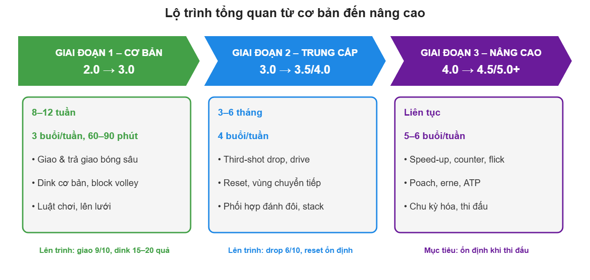
Hình 1. Ba giai đoạn luyện tập và mốc để lên trình.
10 điều cần nhớ khi ra sân
Giao bóng và trả giao bóng sâu, an toàn. Không cho đối thủ điểm miễn phí.
Trả giao bóng xong lên lưới ngay.
Cú thứ 3: drop khi đối thủ đã đứng ở lưới; drive khi bóng ngắn hoặc nảy cao.
Đi từng bước qua vùng chuyển tiếp; split step mỗi khi đối thủ chạm bóng.
Chưa có cơ hội thì đánh chéo sân hoặc vào giữa.
Bóng dưới mép lưới thì đánh nhẹ; bóng trên mép lưới mới tấn công.
Nhắm vào chân, vai thuận tay và người yếu hơn.
Ở lưới, vợt luôn đặt trước ngực.
Di chuyển cùng đồng đội như có sợi dây nối; gọi bóng sớm, rõ.
Giữ thói quen giữa các điểm; một cú đã hỏng 2 lần trong game thì tạm dừng cú đó.
Cách đọc hình minh họa
Sân được vẽ nhìn từ trên xuống. Đội mình (A, B, màu cam) ở bên trái hình, đối thủ (X, Y, màu tím) ở bên phải.
Vì đội mình nhìn về phía lưới (sang phải), nên phía dưới hình là bên phải của đội mình, phía trên hình là bên trái.
Mũi tên vàng: đường bóng. Mũi tên đỏ: cú tấn công. Mũi tên trắng nét đứt: di chuyển của người chơi. Hình tròn mờ: vị trí trước khi di chuyển.
Mọi người chơi trong hình thuận tay phải, trừ khi ghi khác.
PHẦN I – NỀN TẢNG: LUẬT CHƠI VÀ DỤNG CỤ
1. Luật chơi chi tiết
Luật dưới đây theo sách luật USA Pickleball (bản 2026). Luật được cập nhật hằng năm và mỗi giải có thể có thể thức riêng, nên trước khi thi đấu hãy kiểm tra sách luật mới nhất và điều lệ của giải.
1.1. Sân, lưới và bóng
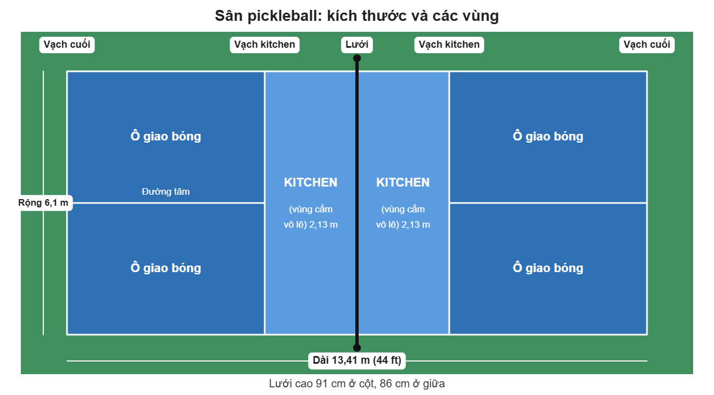
Hình 2. Sân pickleball nhìn từ trên xuống.
Sân 20 × 44 feet (khoảng 6,1 × 13,4 m), dùng cho cả đánh đơn và đánh đôi.
Kitchen (vùng cấm vô lê, NVZ): 7 feet (khoảng 2,13 m) mỗi bên lưới. Vạch kitchen thuộc về kitchen.
Lưới cao 36 inch (91,4 cm) ở cột, 34 inch (86,4 cm) ở giữa.
Mọi vạch biên và vạch cuối đều tính là "trong" (bóng chạm vạch là bóng tốt), riêng khi giao bóng thì bóng chạm vạch kitchen là lỗi.
1.2. Giao bóng
Quy định chung cho mọi kiểu giao:
Đứng sau vạch cuối, giữa đường tâm và đường biên kéo dài. Lúc chạm bóng, chân không được chạm vạch cuối hoặc chạm vào sân.
Giao chéo vào ô giao bóng đối diện. Bóng phải qua khỏi kitchen (rơi vào vạch kitchen là lỗi).
Mỗi người chỉ có một lần giao, không có giao lần hai.
Bóng giao chạm lưới rồi rơi đúng ô (let) thì vẫn tiếp tục chơi, không giao lại.
Kiểu giao
Yêu cầu
Ghi chú
Volley serve (đánh trên không)
Vung vợt theo hướng từ dưới lên; điểm chạm bóng dưới rốn; đầu vợt thấp hơn cổ tay lúc chạm bóng. Từ 2026, các yêu cầu này phải được thể hiện rõ ràng, trường hợp lấp lửng bị tính là lỗi.
Kiểu giao phổ biến nhất.
Drop serve (thả bóng nảy rồi đánh)
Thả bóng rơi tự nhiên (không tung lên, không ném xuống), để bóng nảy rồi đánh. Không giới hạn độ cao chạm bóng hay hướng vung.
Dễ cho người mới, dễ tạo xoáy bằng vợt.
Xoáy khi giao
Không được dùng ngón tay tạo xoáy lúc thả hoặc tung bóng. Xoáy do vợt tạo ra lúc chạm bóng thì hợp lệ.
Áp dụng cho cả hai kiểu giao.
1.3. Thứ tự giao bóng và cách gọi điểm (đánh đôi, tính điểm truyền thống)
Người giao đọc 3 số: điểm đội mình – điểm đội đối thủ – số thứ tự người giao (1 hoặc 2). Ví dụ "5 – 3 – 2".
Mỗi đội có 2 lượt giao (người giao 1, rồi người giao 2). Khi cả hai mất lượt thì đổi giao sang đội kia (side-out).
Ngoại lệ đầu game: đội giao trước chỉ có 1 người giao. Vì vậy điểm đầu tiên được gọi là "0 – 0 – 2".
Người giao 1 luôn bắt đầu từ ô bên phải.
Khi đội giao ghi điểm, người giao đổi ô với đồng đội rồi giao tiếp. Đội nhận không đổi ô.
Mẹo: khi điểm của đội mình là số chẵn, người bắt đầu game ở ô phải sẽ đứng ở ô phải; khi lẻ thì đứng ở ô trái.
Ví dụ – Diễn biến gọi điểm đầu game
Đội A–B giao trước. A đứng ô phải, gọi "0 – 0 – 2" và giao.
Đội A–B thắng điểm. A đổi sang ô trái, gọi "1 – 0 – 2", giao tiếp.
Đội A–B thua điểm. Vì đây là người giao duy nhất của lượt đầu nên đổi giao (side-out).
Đội X–Y giao. Người đứng ô phải (giả sử X) là người giao 1, gọi "0 – 1 – 1".
X–Y thua điểm. Y (người giao 2) giao từ ô của mình, gọi "0 – 1 – 2".
X–Y thua tiếp. Side-out, đội A–B giao lại. Ai đang đứng ô phải là người giao 1, gọi "1 – 0 – 1".
1.4. Gọi điểm khi đánh đơn
Chỉ gọi 2 số: điểm người giao – điểm người nhận.
Điểm người giao là số chẵn (0, 2, 4…) thì giao từ ô phải; số lẻ thì giao từ ô trái.
Mỗi lượt chỉ có một người giao, mất điểm là đổi giao.
1.5. Tính điểm rally (rally scoring)
Bên nào thắng pha bóng thì được điểm, bất kể ai giao.
Sách luật 2026 đã đưa các thể thức rally scoring được phê duyệt vào luật, nhưng cách tính truyền thống (chỉ bên giao ghi điểm) vẫn là mặc định ở các giải được công nhận. Một số giải và một số nội dung (ví dụ vòng loại giải vô địch) vẫn hạn chế rally scoring.
Thể thức rally thường đánh đến 15 hoặc 21. Một số thể thức có quy định "freeze": khi một đội chỉ còn 1 điểm là thắng, họ chỉ được ghi điểm cuối khi đang giao bóng.
Ảnh hưởng chiến thuật: mỗi lỗi đều mất điểm, kể cả khi đang nhận. Vì vậy phải chơi an toàn hơn ở cú trả giao bóng, và giao bóng cũng không được mạo hiểm.
Luôn hỏi ban tổ chức về thể thức trước khi thi đấu.
1.6. Luật hai lần nảy
Bên nhận phải để bóng giao nảy rồi mới đánh.
Bên giao phải để cú trả giao bóng nảy rồi mới đánh.
Sau hai lần nảy đó, ai cũng được vô lê (trừ khi đứng trong kitchen).
1.7. Kitchen (vùng cấm vô lê)
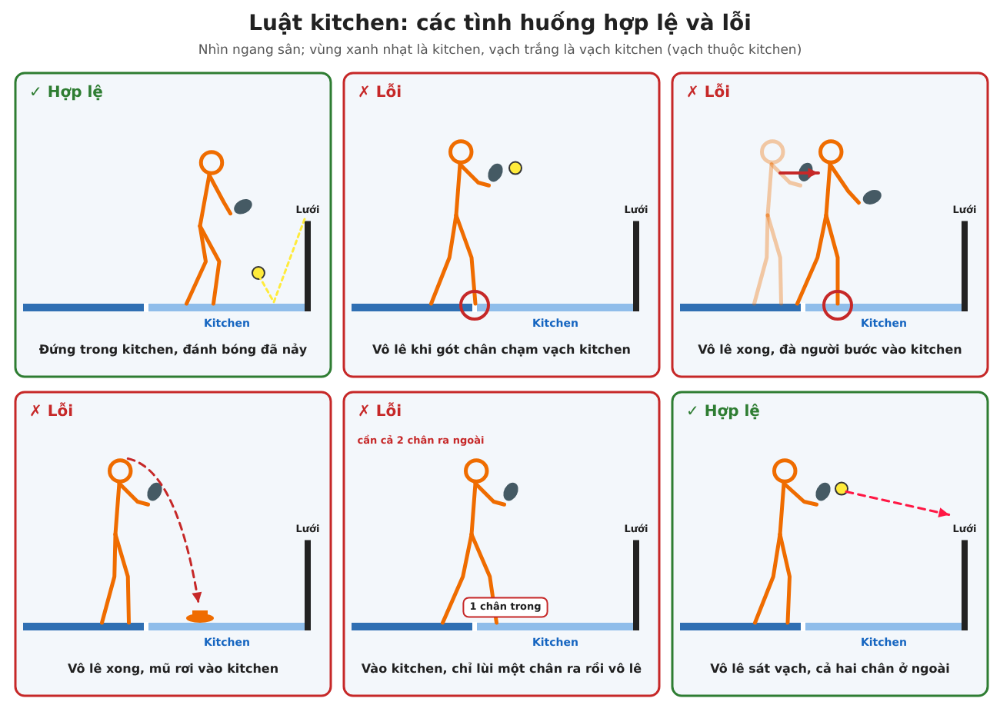
Hình 2a. Các tình huống hợp lệ và lỗi ở kitchen.
Không được vô lê khi bất kỳ phần nào của người, vợt hoặc đồ đang mang chạm vào kitchen hoặc vạch kitchen.
Sau khi vô lê, nếu đà người đưa bạn chạm kitchen thì vẫn là lỗi, kể cả khi bóng đã chết.
Làm rơi đồ (mũ, kính, vợt) vào kitchen trong hoặc ngay sau khi vô lê là lỗi.
Đồng đội không được kéo bạn ra để tránh chạm kitchen.
Được phép đứng, đi lại và đánh bóng đã nảy ở trong kitchen bất cứ lúc nào.
Sau khi vào kitchen, phải đặt cả hai chân ra ngoài kitchen rồi mới được vô lê.
Tình huống
Hợp lệ hay lỗi?
Đứng trong kitchen, đánh bóng sau khi bóng nảy
Hợp lệ.
Vô lê ở vạch, gót chân chạm vạch kitchen
Lỗi (vạch thuộc kitchen).
Vô lê xong, đà người làm bạn bước vào kitchen
Lỗi.
Vô lê xong, mũ rơi vào kitchen
Lỗi.
Vào kitchen đánh dink, rồi lùi một chân ra và vô lê ngay
Lỗi (phải đặt cả hai chân ra ngoài trước).
Erne: nhảy qua góc kitchen từ ngoài sân, vô lê trên không, tiếp đất ngoài sân
Hợp lệ nếu không chạm kitchen.
Vợt chạm vạch kitchen khi đang vô lê
Lỗi.
1.8. Các lỗi khác
Bóng chạm lưới rồi rơi về sân mình, hoặc bóng ra ngoài.
Người, vợt hoặc quần áo chạm lưới hoặc cột lưới khi bóng còn sống.
Bóng chạm người hoặc quần áo (kể cả khi bạn đang đứng ngoài sân): người bị chạm mất điểm.
Đánh bóng trước khi bóng qua lưới (trừ khi xoáy hoặc gió đưa bóng quay về).
Giữ hoặc đánh bóng hai lần không cố ý trong một cú liên tục thì hợp lệ; cố tình đánh hai lần là lỗi.
Mang theo bóng thứ hai lộ ra ngoài trong lúc chơi.
Mới 2026: bóng qua lưới hợp lệ, nảy trong sân đối thủ, sau đó chạm cột lưới (vật cố định) thì người đánh thắng điểm.
ATP: bóng đi vòng ngoài cột, thấp hơn mặt lưới vẫn hợp lệ nếu rơi trong sân.
1.9. Gọi bóng trong/ngoài và tinh thần fair play
Mỗi đội chỉ gọi bóng ở phần sân của mình.
Bóng là "trong" trừ khi bạn thấy rõ khoảng trống giữa bóng và vạch. Không chắc thì là bóng trong.
Phải gọi "Ra" ngay, rõ ràng. Gọi muộn (sau khi đã đánh trả hoặc sau khi bàn với đồng đội lâu) có thể không được tính.
Hai người cùng đội gọi khác nhau thì bóng là trong.
Không được hỏi khán giả về bóng trong hay ngoài.
Có thể hỏi ý kiến đối thủ nếu cả đội mình không nhìn rõ; nếu đối thủ nói trong thì là trong.
1.10. Hội ý (timeout) và các quy định khác
Thông thường mỗi đội có 2 lần hội ý, mỗi lần 1 phút, cho game đến 11 điểm; game đến 15 hoặc 21 thường có 3 lần. Số lần cụ thể theo điều lệ giải.
Có thể xin hội ý y tế khi chấn thương (thời gian theo quy định giải).
Đổi sân giữa các game; trong game quyết định thường đổi sân khi một đội đạt 6 điểm (game 11), 8 điểm (game 15) hoặc 11 điểm (game 21).
Từ 2026, trọng tài có thể nhắc nhở và phạt hành vi xấu ngay từ lúc khởi động trước trận.
2. Dụng cụ: vợt, bóng, giày và phụ kiện
2.1. Vợt
Luật kích thước: tổng chiều dài và chiều rộng không quá 24 inch (61 cm), chiều dài không quá 17 inch (43,2 cm). Không giới hạn trọng lượng. Nếu thi đấu ở giải được công nhận, vợt phải có trong danh sách được USA Pickleball phê duyệt.
Cân bằng giữa lực và kiểm soát. Phù hợp đa số người chơi.
Nặng (trên khoảng 8,2 oz / 232 g)
Nhiều lực, ổn định khi đỡ bóng mạnh; chậm hơn, dễ mỏi tay và khuỷu.
Độ dày lõi
Khoảng 16 mm
Mềm, êm, kiểm soát tốt, dễ dink và reset.
Khoảng 13–14 mm
Nảy hơn, nhiều lực hơn, khó kiểm soát cú nhẹ hơn.
Mặt vợt
Sợi thủy tinh (fiberglass)
Nảy, nhiều lực, rẻ hơn.
Carbon (carbon thô, carbon T700…)
Ma sát tốt tạo xoáy, kiểm soát tốt, đắt hơn.
Hình dạng
Tiêu chuẩn (standard)
Vùng đánh tốt (sweet spot) rộng, dễ dùng.
Dài (elongated)
Tầm với xa, nhiều lực khi drive; vùng đánh tốt nhỏ hơn.
Rộng (widebody)
Dễ trúng bóng, ổn định; tầm với ngắn hơn.
Cán vợt
Chu vi khoảng 4–4,5 inch
Cán nhỏ: dễ xoay cổ tay; cán to: ổn định, đỡ mỏi. Có thể quấn thêm cán (overgrip) để to hơn.
Cách đo cán: đo từ nếp gấp giữa lòng bàn tay đến đầu ngón áp út. Khoảng 4–4,25 inch là cán nhỏ; trên 4,5 inch là cán to. Không chắc thì chọn cán nhỏ rồi quấn thêm.
Người mới: vợt tiêu chuẩn, trọng lượng trung bình, lõi 16 mm, mặt carbon hoặc fiberglass tầm trung. Không cần vợt đắt.
Người hay đau khuỷu tay: chọn vợt nặng vừa, lõi dày, cán vừa tay, tránh vợt quá nhẹ (rung nhiều).
Thay vợt: khi mặt vợt bị mòn nhẵn (mất xoáy), có tiếng lạo xạo bên trong, lõi bị lún, hoặc thấy bóng "chết" bất thường.
Bảo quản: không để vợt trong xe nóng, dán băng cạnh để bảo vệ viền, lau mặt vợt bằng khăn ẩm sau khi chơi.
2.2. Bóng
Loại
Đặc điểm
Dùng khi
Bóng ngoài trời
Nhựa cứng, nặng hơn, khoảng 40 lỗ nhỏ. Ít bị gió ảnh hưởng, nảy thấp, nhanh.
Sân ngoài trời, sân bê tông.
Bóng trong nhà
Nhựa mềm, nhẹ hơn, khoảng 26 lỗ to. Chậm, nảy cao, dễ kiểm soát.
Sân trong nhà, sàn gỗ hoặc sàn nhựa.
Thi đấu: dùng đúng bóng chính thức của giải, và tập trước bằng loại bóng đó ít nhất 1–2 tuần.
Thay bóng khi bị nứt, méo hoặc mất độ nảy. Bóng ngoài trời dễ nứt khi trời lạnh.
2.3. Giày
Chọn giày chuyên cho sân (court shoes: giày pickleball, tennis hoặc cầu lông). Đế phẳng, cứng hai bên để đỡ cổ chân khi di chuyển ngang.
Không dùng giày chạy bộ: đế cao, mềm, chỉ thiết kế cho chạy thẳng, dễ gây lật cổ chân khi bước ngang.
Sân ngoài trời (bê tông): đế cao su bền, gai sâu. Sân trong nhà: đế cao su mềm, không để lại vết (non-marking).
Thay giày khi đế mòn trơn hoặc phần đỡ cổ chân bị mềm, thường sau khoảng 4–6 tháng nếu chơi đều.
2.4. Phụ kiện
Quấn cán (overgrip): giúp cầm chắc, thấm mồ hôi, chỉnh độ to cán. Thay khi bị trơn.
Băng bảo vệ cạnh vợt.
Kính thể thao: bảo vệ mắt khỏi bóng ở lưới và chống nắng.
Mũ hoặc băng đô, khăn, bình nước lớn, gói điện giải.
Cấu trúc một buổi tập: khởi động 10–15 phút → tập kỹ thuật (drill) 30–45 phút → đánh tình huống hoặc đánh trận 20–30 phút → giãn cơ 5–10 phút.
Tăng tải từ từ: mỗi tuần không tăng tổng thời gian tập quá khoảng 10%.
Tỷ lệ tập và chơi: người mới nên dành khoảng 70% cho drill, 30% cho đánh trận. Lên trình cao thì đảo ngược dần, nhưng vẫn phải giữ drill.
Nghỉ: tối thiểu 1–2 ngày nghỉ hoàn toàn mỗi tuần. Ngủ 7–9 tiếng.
Đánh giá trình độ (DUPR hoặc USA Pickleball): 2.0–2.5 mới chơi; 3.0–3.5 trung cấp; 4.0–4.5 khá đến nâng cao; 5.0 trở lên thi đấu.
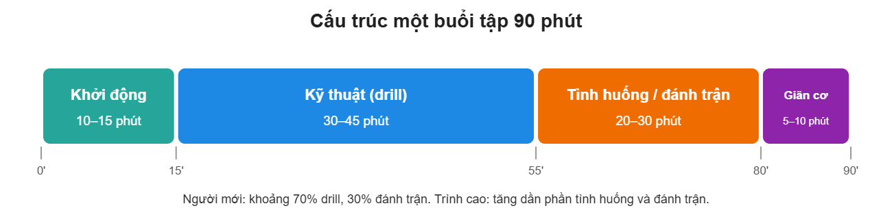
Hình 3. Phân bổ thời gian trong một buổi tập.
4. Khởi động chuẩn (10–15 phút)
Chạy nhẹ hoặc nhảy dây 3 phút.
Giãn cơ động: xoay vai, xoay hông, lunge kèm xoay người, đá chân trước-sau và ngang.
Di chuyển: bước ngang (side shuffle), bước chéo, lùi 5–10 m.
Dink nhẹ tại vạch kitchen 3–5 phút.
5. Giai đoạn 1: Cơ bản (2.0 → 3.0), khoảng 8–12 tuần
Mục tiêu: nắm luật, giao bóng và trả giao bóng ổn định, đánh dink, di chuyển lên lưới. Tần suất: 3 buổi/tuần, mỗi buổi 60–90 phút.
Ngày
Nội dung
Thứ 2
Giao bóng (sâu, an toàn) và trả giao bóng sâu: 20 quả × 3 hiệp mỗi loại. Forehand/backhand từ cuối sân.
Thứ 4
Dink: thẳng, chéo, đi bóng giữa lưới. Mục tiêu 20 quả liên tiếp không lỗi. Tập di chuyển ở vạch kitchen.
Thứ 6
Vô lê cơ bản (block). Đánh trận đôi 30–40 phút, áp dụng luật 2 lần nảy và luật kitchen.
Thứ 7 hoặc CN
Tùy chọn: chơi giao lưu, hoặc thể lực nhẹ 30 phút.
Mốc để lên giai đoạn 2:
Giao bóng vào sân 9/10 quả.
Trả giao bóng sâu qua nửa sân.
Duy trì loạt dink 15–20 quả.
6. Giai đoạn 2: Trung cấp (3.0 → 3.5/4.0), khoảng 3–6 tháng
Mục tiêu: third-shot drop, chơi ở vùng chuyển tiếp (transition zone), reset bóng, phối hợp đánh đôi. Tần suất: 4 buổi/tuần, gồm 3 buổi trên sân và 1 buổi thể lực.
Ngày
Nội dung
Thứ 2
Third-shot drop và drive: 50–100 quả từ cuối sân. Luyện cách chọn khi nào drop, khi nào drive.
Thứ 3
Thể lực: sức mạnh chân và core, agility ladder (thang dây nhanh nhẹn).
Thứ 4
Transition zone: "skinny singles" (đánh đơn nửa sân), drill reset (đỡ bóng mạnh cho rơi vào kitchen), vô lê nhanh (hands battle).
Thứ 6
Dink nâng cao: dink có chủ đích (đẩy đối thủ ra ngoài, đánh vào chân). Tập tấn công bóng cao (put-away). Đánh trận 40 phút.
Thứ 7
Đánh trận hoặc giải nhỏ. Ghi lại các lỗi để đưa vào buổi tập tuần sau.
Drill nên tập:
Drill "7–11": cả hai đứng cuối sân, tập third shot rồi tiến lên lưới.
Reset từ giữa sân.
Lob và overhead (đập bóng trên đầu).
Đổi vị trí khi bị lob.
Mốc để lên giai đoạn 3:
Third-shot drop vào kitchen khoảng 6/10 quả.
Reset ổn định khi bị tấn công.
Hiểu cách che vùng giữa sân và xếp vị trí (stacking) cơ bản.
7. Giai đoạn 3: Nâng cao (4.0 → 4.5/5.0+)
Mục tiêu: tăng tốc đúng lúc (speed-up), phản tấn công, chiến thuật đánh đôi, ổn định tâm lý khi thi đấu. Tần suất: 5–6 buổi/tuần, gồm 3–4 buổi trên sân, 2 buổi thể lực và 1 buổi hồi phục.
Ngày
Nội dung
Thứ 2
Kỹ thuật cường độ cao: speed-up và counter, hands battle, cú ATP, erne.
Thăng bằng: đứng 1 chân, bài tập trên bóng bosu (phòng bong gân cổ chân).
10. Phòng chấn thương và hồi phục
Luôn khởi động trước khi tập. Không lùi chạy về sau để đỡ bóng lob; hãy xoay người và chạy chéo.
Mang giày chuyên dụng cho sân (court shoes) để di chuyển ngang an toàn. Giày chạy bộ không phù hợp.
Đau khớp kéo dài hơn 48 giờ thì nghỉ và đi khám.
Uống nước trước, trong và sau buổi tập. Bổ sung điện giải nếu tập trên 60 phút trời nóng.
11. Tập luyện khi không có bạn tập
Tập một mình không thay được đánh với người, nhưng rất hiệu quả để luyện độ ổn định, phản xạ tay và bước chân. Mục tiêu là tạo ra hàng trăm lần chạm bóng mỗi buổi.
11.1. Chuẩn bị bức tường
Chọn tường phẳng, cứng (bê tông, gạch), nền phẳng trước tường ít nhất 6–7 m.
Dán băng dính ngang tường ở độ cao 86–91 cm để làm "lưới".
Dán thêm vài ô mục tiêu (khoảng 30 × 30 cm) ở trên vạch lưới để luyện độ chính xác.
Đánh dấu trên sàn: vạch cách tường 2,1 m (vạch kitchen) và 6–7 m (cuối sân).
Dùng bóng ngoài trời (cứng hơn) để bóng bật về đều.
11.2. Các bài tập với tường
Bài tập
Cách làm
Mục tiêu
Dink tường
Đứng sau vạch 2,1 m, đánh nhẹ để bóng chạm tường ngay trên vạch lưới và nảy lại trước chân. Xen kẽ thuận tay, trái tay.
50 quả liên tiếp, không để bóng nảy 2 lần.
Vô lê nhanh (hands)
Đứng cách tường 1,5–2 m, vô lê liên tục không để bóng chạm đất. Vợt trước ngực, vung thật ngắn.
100 quả liên tiếp; tăng dần tốc độ.
Vô lê đổi tay
Như trên nhưng bắt buộc xen kẽ thuận tay – trái tay.
50 quả liên tiếp.
Drive và drop
Đứng 6–7 m. Drive mạnh vào tường, bóng bật về, đánh drop nhẹ lên vạch lưới. Lặp lại.
20 cặp drive–drop liên tiếp.
Reset tường
Đứng 4 m, đánh mạnh vào tường, bóng bật mạnh về, reset nhẹ để bóng chạm tường thấp, ngay trên vạch.
10/20 quả reset rơi thấp.
Ném mục tiêu
Đánh vào các ô mục tiêu dán trên tường theo thứ tự.
8/10 quả trúng ô.
Đập bóng
Đánh bóng xuống sàn trước tường cho bóng bật lên tường rồi rơi xuống cao, sau đó đập.
Luyện điểm chạm bóng cao.
11.3. Tập với máy bắn bóng
Third-shot drop: máy đặt ở bên kia lưới, bắn bóng sâu. Đứng cuối sân đánh drop vào kitchen, đặt khăn hoặc nón làm mục tiêu. 3 hiệp × 30 quả.
Reset: máy bắn nhanh, thấp vào chân. Đứng giữa sân reset.
Vô lê: máy bắn ngang ngực, tốc độ trung bình đến nhanh.
Dink: máy bắn ngắn, chậm. Luyện dink chéo, dọc dây theo mục tiêu.
Đập bóng: máy bắn lob. Luyện xoay người và đập vào vùng mục tiêu.
Mẹo: bật chế độ bắn ngẫu nhiên (nếu có) để luyện phản xạ và di chuyển.
11.4. Giao bóng và cú đánh một mình trên sân
Giao bóng: mang một rổ 30–50 quả. Đặt 3 mục tiêu ở ô giao: góc sâu trái tay, góc sâu thuận tay, giữa sâu. Mỗi vòng 10 quả, ghi số quả trúng. Chơi trò "21 điểm": trúng mục tiêu +2, trong sân +1, lỗi −2.
Drop tự tung: đứng cuối sân, tự thả bóng nảy rồi đánh drop vào kitchen. Sau đó thả bóng thấp hơn, xa người hơn để giống tình huống thật.
Drive tự tung: tương tự, nhắm vào khăn đặt gần vạch cuối đối diện.
Đánh vợt không bóng (shadow): đứng ở vạch kitchen, tưởng tượng các pha dink, vô lê, split step, di chuyển sang biên rồi về giữa. 3 hiệp × 2 phút.
Chạy chạm cọc: đặt 4 nón ở 4 góc vùng kitchen và giữa sân, chạy chạm theo hiệu lệnh (tự đọc số ngẫu nhiên bằng ứng dụng).
Phản xạ với bóng tennis: ném bóng vào tường từ 2 m và bắt bằng một tay, xen kẽ tay trái, tay phải.
Split step theo nhịp: dùng ứng dụng phát tiếng bíp ngẫu nhiên; mỗi tiếng bíp là một lần split step rồi di chuyển.
11.6. Giáo án mẫu 60 phút tập một mình
Thời gian
Nội dung
0–10 phút
Khởi động động, thang dây.
10–20 phút
Dink tường (thuận tay, trái tay, xen kẽ).
20–30 phút
Vô lê nhanh với tường, vô lê đổi tay.
30–40 phút
Drive và drop với tường, hoặc drop tự tung trên sân.
40–50 phút
Giao bóng vào mục tiêu (trò 21 điểm).
50–55 phút
Shadow ở vạch kitchen, split step.
55–60 phút
Giãn cơ, ghi nhật ký kết quả.
Có thể thay 1 buổi drill trong lịch tuần ở mục 5–7 bằng buổi tập một mình này nếu không có bạn tập.
12. Theo dõi tiến bộ
Ghi nhật ký tập: drill nào, bao nhiêu quả, tỷ lệ thành công.
Các chỉ số nên đo: tỷ lệ giao bóng vào sân, tỷ lệ third-shot drop rơi đúng kitchen, số quả dink liên tiếp, số lỗi tự đánh hỏng mỗi trận.
Quay video mỗi 2–4 tuần để so sánh.
Cập nhật điểm DUPR qua các trận có tính điểm.
13. Lỗi thường gặp khi lên lịch tập
Chỉ đánh trận, không tập drill, nên kỹ thuật chững lại ở mức 3.0.
Tập quá dày khi mới chơi, dễ bị đau khuỷu tay và vai.
Bỏ qua thể lực và hồi phục.
Không có mục tiêu cụ thể cho từng buổi.
PHẦN III – KỸ THUẬT
14. Kỹ thuật chi tiết
Mỗi kỹ thuật gồm: định nghĩa, khi nào dùng, điểm mấu chốt, lỗi hay gặp và bài tập. Bảng cuối mục cho biết nên học kỹ thuật nào ở giai đoạn nào.
14.1. Nền tảng: cách cầm vợt, tư thế, bước chân
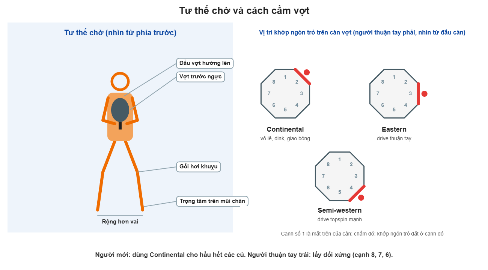
Hình 3a. Tư thế chờ và vị trí cầm vợt trên cán.
Cầm vợt continental (kiểu cầm búa): dùng cho hầu hết các cú, nhất là vô lê và dink, vì đánh được cả thuận tay lẫn trái tay mà không phải đổi tay cầm.
Eastern / semi-western: dùng cho cú drive thuận tay có topspin mạnh, phổ biến ở người chơi nâng cao.
Tư thế chờ (ready position): hai chân rộng hơn vai, gối hơi khuỵu, trọng tâm dồn về mũi chân, vợt đưa trước ngực, đầu vợt hướng lên.
Split step: nhún nhẹ hai chân đúng lúc đối thủ chạm bóng để sẵn sàng bật sang bất kỳ hướng nào. Đây là thói quen quan trọng nhất ở vùng chuyển tiếp.
Bước chân: bước ngang (shuffle) khi di chuyển ở lưới; bước chéo (crossover) khi phải chạy xa; không bao giờ chạy lùi thẳng về sau.
14.2. Giao bóng (serve)
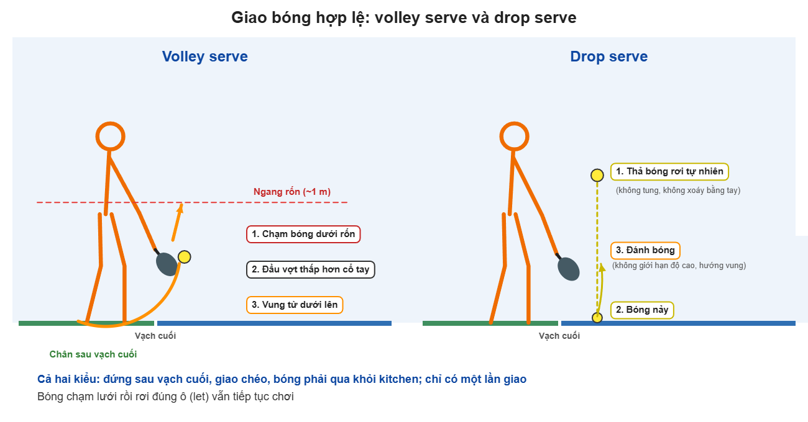
Hình 3b. Giao bóng hợp lệ: volley serve và drop serve.
Là gì: Cú mở đầu điểm, đánh từ dưới lên, chạm bóng dưới thắt lưng. Có 2 kiểu: volley serve (đánh bóng trên không) và drop serve (thả bóng nảy rồi đánh).
Khi dùng: Đầu mỗi điểm.
Điểm mấu chốt: Ưu tiên an toàn và độ sâu (bóng rơi gần vạch cuối). Khi đã ổn định thì thêm xoáy hoặc đổi hướng để đối thủ khó trả.
Lỗi hay gặp: Đánh quá mạnh nên ra ngoài; chạm bóng cao hơn thắt lưng; giẫm vạch cuối.
Bài tập: Đặt mục tiêu (cái nón hoặc khăn) cách vạch cuối khoảng 1 m, giao 3 hiệp × 20 quả, ghi lại số quả trúng vùng mục tiêu.
14.3. Trả giao bóng (return)
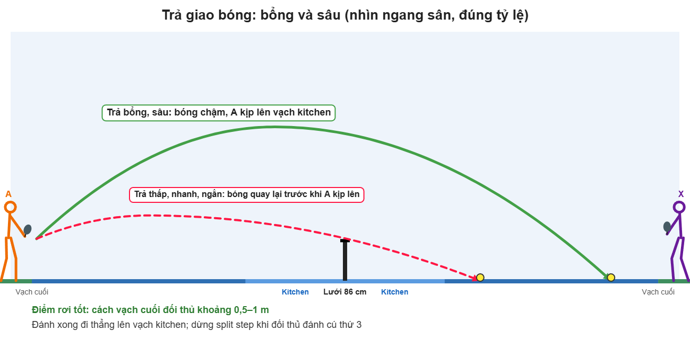
Hình 3c. Trả giao bóng bổng, sâu so với trả thấp, ngắn.
Là gì: Cú đánh đầu tiên của bên nhận, sau khi bóng nảy.
Khi dùng: Ngay sau giao bóng.
Điểm mấu chốt: Trả sâu và cao vừa phải để có thời gian lên lưới. Ngay sau khi đánh, tiến thẳng lên vạch kitchen.
Lỗi hay gặp: Trả ngắn khiến đối thủ dễ tấn công; đánh xong đứng lại cuối sân.
Bài tập: Bạn tập giao bóng liên tục, bạn trả sâu rồi chạy lên vạch kitchen. 20 quả × 3 hiệp.
14.4. Drive (đánh mạnh từ cuối sân)
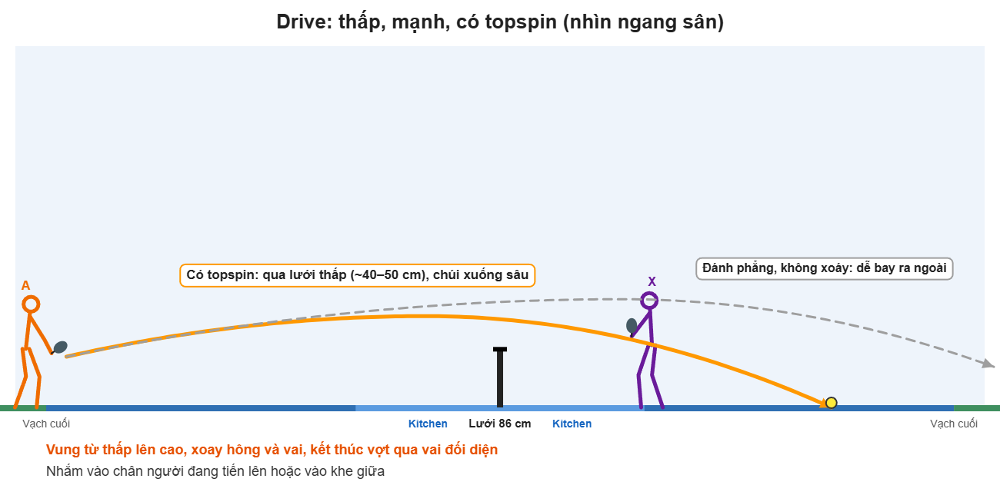
Hình 3d. Đường bóng drive có topspin.
Là gì: Cú đánh mạnh, thấp, có topspin, đi gần lưới.
Khi dùng: Khi bóng nảy cao hoặc đối thủ còn đang di chuyển; làm cú third shot thay cho drop.
Điểm mấu chốt: Đánh từ thấp lên cao để tạo topspin, xoay hông và vai, kết thúc vợt qua vai đối diện.
Lỗi hay gặp: Đánh phẳng nên bóng bay ra ngoài; chỉ dùng tay, không xoay người.
Bài tập: Đánh drive chéo sân với bạn tập 5 phút, rồi đổi sang đánh thẳng.
14.5. Third-shot drop
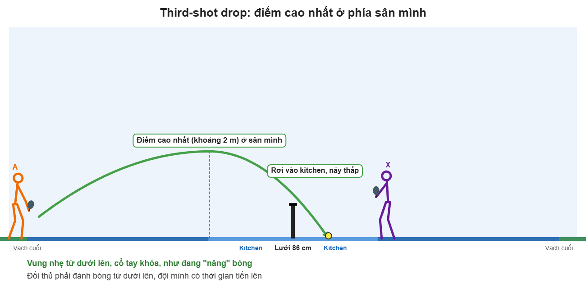
Hình 3e. Đường bóng third-shot drop.
Là gì: Cú thứ 3 của bên giao bóng: đánh nhẹ, bóng vồng qua lưới và rơi vào kitchen của đối thủ.
Khi dùng: Khi đối thủ đã đứng ở lưới, bên mình cần thời gian để tiến lên.
Điểm mấu chốt: Vung từ dưới lên, cổ tay khóa, như đang "nâng" bóng. Điểm cao nhất của đường bóng nằm ở phía sân mình.
Lỗi hay gặp: Đánh quá cao nên bị đập; vung tay quá mạnh; đánh xong không tiến lên.
Bài tập: Đứng cuối sân đánh drop vào kitchen, mỗi quả tốt thì tiến lên một bước (drill "drop and step").
14.6. Dink
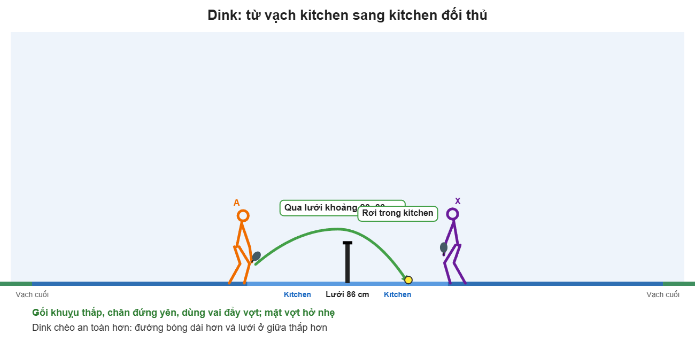
Hình 3f. Đường bóng dink.
Là gì: Cú đánh nhẹ, bóng rơi vào kitchen của đối thủ, đánh từ vạch kitchen.
Khi dùng: Khi cả 4 người đứng ở lưới, để chờ đối thủ đánh bóng cao.
Điểm mấu chốt: Gối khuỵu thấp, chân giữ yên, dùng vai đẩy vợt; vợt hở mặt nhẹ. Các biến thể: dink thẳng, dink chéo (an toàn hơn vì lưới thấp ở giữa và đường bóng dài), topspin dink (tấn công), slice dink (bóng nảy thấp).
Lỗi hay gặp: Đứng thẳng người, dùng cổ tay; bóng bay cao.
Bài tập: Dink chéo liên tục đến 50 quả. Biến thể: chỉ được dink vào nửa sân bên trái của đối thủ.
14.7. Vô lê (volley)
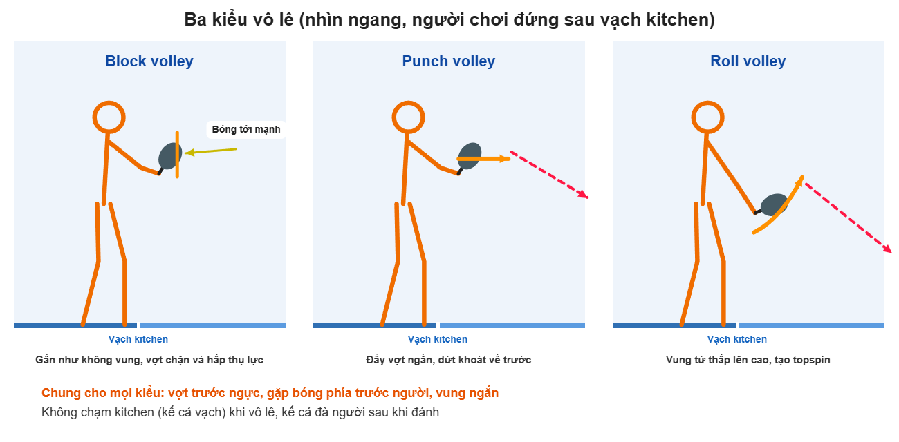
Hình 3g. Ba kiểu vô lê.
Là gì: Đánh bóng trên không, trước khi bóng chạm sân. Có nhiều loại: • Block volley: chặn bóng mạnh, hấp thụ lực, gần như không vung. • Punch volley: đẩy vợt ngắn và dứt khoát để tấn công. • Roll volley: vô lê có topspin, đánh bóng ngang thắt lưng. • Dink volley: vô lê nhẹ để bóng rơi vào kitchen, giúp bên mình không bị đẩy lùi.
Khi dùng: Ở lưới hoặc vùng chuyển tiếp, khi bóng tới cao ngang hoặc trên lưới.
Điểm mấu chốt: Vung ngắn, gặp bóng phía trước người, giữ vợt cao trước ngực. Không đứng trong kitchen hoặc giẫm vạch khi vô lê (kể cả đà người sau khi đánh).
Lỗi hay gặp: Vung quá dài; để bóng tới sát người; đà người lao vào kitchen.
Bài tập: Hai người đứng cách vạch kitchen 1 bước, vô lê qua lại liên tục, tăng tốc dần (hands battle).
14.8. Flick
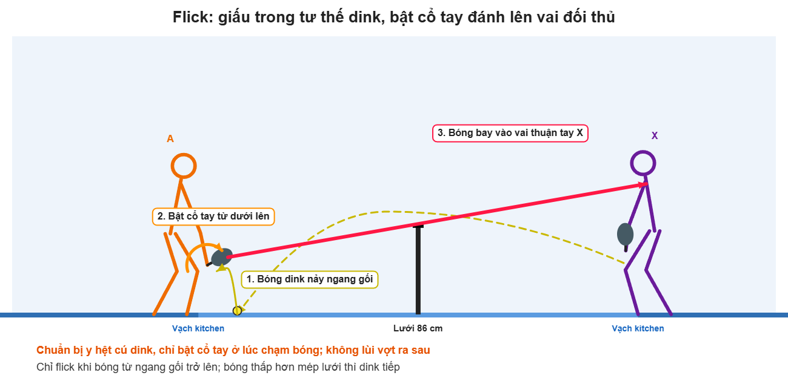
Hình 3h. Flick từ tư thế dink.
Là gì: Cú tăng tốc bất ngờ chỉ bằng cổ tay và cẳng tay từ vị trí dink. Thường dùng trái tay (backhand flick) hoặc thuận tay (forehand flick), bóng bay thẳng vào người, vào vai vợt của đối thủ hoặc dọc biên.
Khi dùng: Khi bóng dink rơi gần lưới và hơi cao (từ ngang gối trở lên), đối thủ đang đứng thấp hoặc mất thăng bằng.
Điểm mấu chốt: Giấu ý đồ: tư thế giống hệt cú dink rồi mới bật cổ tay lên phía trước, tạo topspin. Nhắm vào vai vợt hoặc hông đối thủ.
Lỗi hay gặp: Flick bóng quá thấp (dưới lưới) dễ đưa vào lưới; lộ ý đồ từ sớm; flick khi bóng ở xa và quá thấp.
Bài tập: Dink 4–6 quả với bạn tập; ai nhận được bóng cao thì flick, người kia phải counter. Tính điểm như đánh trận.
14.9. Speed-up và counter
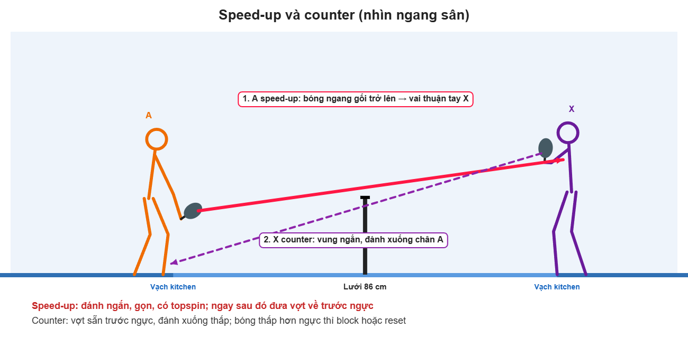
Hình 3i. Speed-up và counter.
Là gì: Speed-up là chủ động đánh mạnh từ tình huống dink/vô lê nhẹ. Counter là phản đòn ngay lập tức khi bị speed-up.
Khi dùng: Speed-up khi bóng đủ cao hoặc đối thủ yếu thế. Counter khi bóng đi vào người hoặc cao ngang ngực.
Điểm mấu chốt: Speed-up: nhắm vào vai vợt hoặc hông. Counter: vợt đưa ra trước, vung ngắn, đánh ngược xuống chân đối thủ.
Lỗi hay gặp: Speed-up bóng thấp; counter bằng cú vung dài.
Bài tập: Dink qua lại, một người được quyền speed-up bất cứ lúc nào, người kia counter. Đánh đến 11 điểm.
14.10. Reset
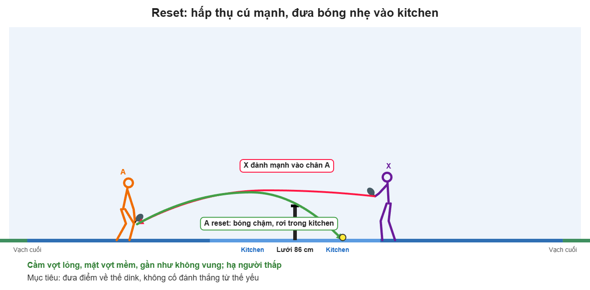
Hình 3j. Reset khi bị đánh vào chân.
Là gì: Cú làm chậm bóng: hấp thụ một cú mạnh và cho bóng rơi nhẹ vào kitchen để đưa điểm về thế cân bằng.
Khi dùng: Khi bị tấn công ở vùng chuyển tiếp hoặc ở lưới.
Điểm mấu chốt: Mặt vợt mềm, cầm lỏng tay, gần như không vung. Hạ người thấp.
Lỗi hay gặp: Cầm vợt quá chặt nên bóng bật cao; cố đánh trả mạnh.
Bài tập: Một người đứng ở lưới drive hoặc vô lê mạnh, người kia đứng giữa sân reset vào kitchen. 3 hiệp × 20 quả.
14.11. Lob
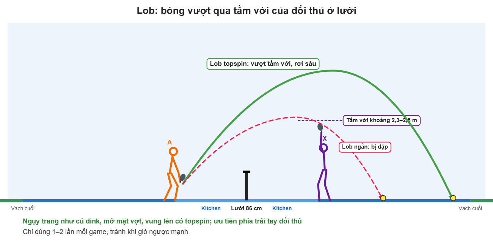
Hình 3k. Lob vượt tầm với so với lob ngắn.
Là gì: Bóng vồng cao qua đầu đối thủ đang đứng ở lưới.
Khi dùng: Đối thủ đứng quá sát lưới, hoặc khi mình cần thời gian để lấy lại vị trí. Nên dùng ít và bất ngờ.
Điểm mấu chốt: Ngụy trang như một cú dink. Đánh lob có topspin để bóng rơi nhanh. Ưu tiên lob qua bên trái tay của đối thủ.
Lỗi hay gặp: Lob ngắn khiến đối thủ đập dễ; lob khi trời gió mạnh.
Bài tập: Dink 3–4 quả rồi lob; bạn tập phải xoay người chạy về đỡ. 10 quả × 3 hiệp.
14.12. Đập bóng (overhead smash)
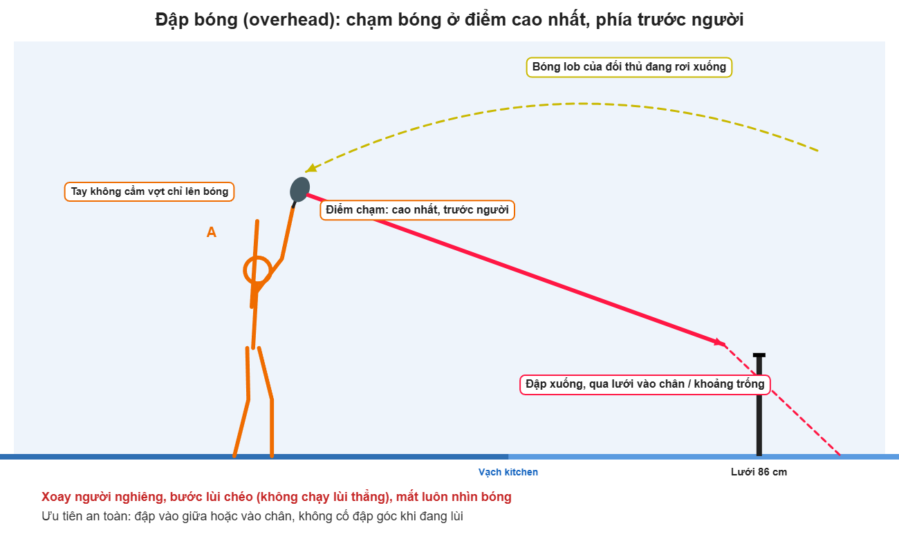
Hình 3l. Đập bóng (overhead).
Là gì: Cú đập mạnh từ trên cao khi đối thủ lob ngắn.
Khi dùng: Bóng cao trên đầu và không quá sâu.
Điểm mấu chốt: Xoay người nghiêng, tay không cầm vợt chỉ lên bóng, chạm bóng ở điểm cao nhất phía trước người. Không chạy lùi thẳng.
Lỗi hay gặp: Mất dấu bóng; đánh quá mạnh nên ra ngoài; lùi về sau rồi ngã.
Bài tập: Bạn tập lob liên tục, bạn xoay người và đập vào một vùng mục tiêu. 15 quả × 3 hiệp.
14.13. Erne
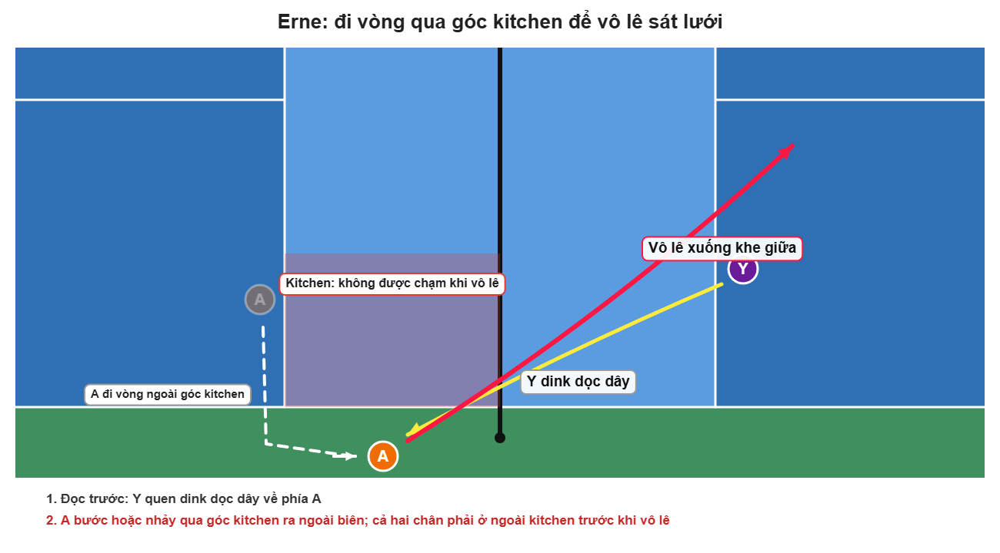
Hình 3m. Đường di chuyển khi đánh erne.
Là gì: Nhảy qua góc kitchen (hoặc đi vòng ra ngoài sân) để vô lê bóng sát biên, rất gần lưới.
Khi dùng: Đối thủ dink dọc biên liên tục về một bên.
Điểm mấu chốt: Đọc trước đường bóng; bật nhảy qua hẳn khu kitchen, chân không chạm kitchen trước khi đánh.
Lỗi hay gặp: Lộ ý đồ quá sớm; chân chạm kitchen nên bị phạt.
Bài tập: Bạn tập dink dọc biên, bạn tập bước chân erne không bóng, sau đó có bóng.
14.14. ATP (around the post)
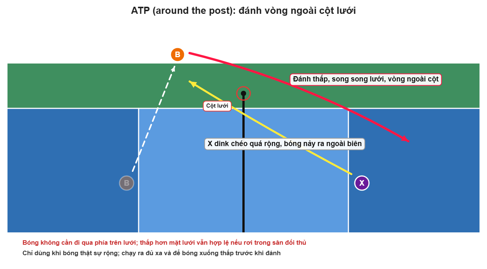
Hình 3n. Đường bóng ATP.
Là gì: Đánh bóng vòng ngoài cột lưới, bóng không cần đi qua trên lưới.
Khi dùng: Bóng dink chéo quá rộng, kéo mình ra ngoài biên.
Điểm mấu chốt: Chạy ra ngoài sân đủ xa, đánh thấp và song song với lưới vào sân đối thủ.
Lỗi hay gặp: Cố đánh vòng qua cột khi bóng không đủ rộng.
Bài tập: Bạn tập dink chéo rộng có chủ đích để luyện chạy và đánh ATP. Chỉ tập ở mức nâng cao.
14.15. Lộ trình học kỹ thuật theo giai đoạn
Trình độ
Kỹ thuật cần thành thạo
2.0–3.0 (Cơ bản)
Cầm vợt continental, tư thế chờ, giao bóng, trả giao bóng, dink cơ bản, block volley, bước ngang.
Flick, speed-up và counter, roll volley, topspin/slice dink, erne, ATP, cầm vợt eastern/semi-western cho drive, phối hợp với stacking và poaching.
PHẦN IV – CHIẾN THUẬT
15. Nguyên lý chiến thuật và quy ước
Kỹ thuật cho biết cách đánh, chiến thuật cho biết đánh cú nào, vào đâu, lúc nào. Mục này đi từ nguyên lý chung đến tình huống cụ thể, kèm lộ trình 4 tuần, phiếu tự đánh giá và bảng thuật ngữ.
15.1. Năm nguyên lý cốt lõi
Chiếm lưới: đội đứng ở vạch kitchen thắng phần lớn các điểm. Mọi cú đánh từ cuối sân đều nhằm giúp mình tiến lên lưới, hoặc giữ đối thủ ở cuối sân.
Kiên nhẫn hơn đối thủ: ở trình độ phổ thông, phần lớn điểm kết thúc vì lỗi tự đánh hỏng chứ không phải cú thắng điểm. Ít lỗi hơn là thắng.
Chuẩn bị cho cú tiếp theo: mỗi cú đánh đều phải tính trước bóng sẽ quay lại thế nào. Đánh xong lập tức trở về tư thế chờ, vợt trước ngực, split step khi đối thủ chạm bóng.
Bóng thấp thì nhẹ, bóng cao thì mạnh: độ cao của bóng quyết định quyền tấn công (xem bảng đèn giao thông ở mục 16.20).
Đánh vào chỗ khó: chân, vai vợt, khoảng giữa hai người, hoặc vào người yếu hơn.
15.2. Quy ước dùng trong các ví dụ
Đội mình:A (bạn) và B (đồng đội). Đối thủ:X và Y.
Mọi người thuận tay phải, trừ khi ghi khác.
"Bên phải / bên trái" là nhìn từ phía người chơi hướng về lưới. Mặc định A đứng bên phải, B bên trái; X đứng bên phải của đội X–Y (tức là chéo góc với A), Y đứng bên trái (đối diện thẳng với A).
Với hai người thuận tay phải đứng cạnh nhau: người bên trái có thuận tay ở giữa sân, người bên phải có trái tay ở giữa sân. Điều này rất quan trọng khi chọn hướng đánh.
16. Chiến thuật đánh đôi chi tiết và tình huống mẫu
Mục này phân tích sâu từng chiến thuật: mục tiêu, lý do hiệu quả, các bước thực hiện, ví dụ diễn biến từng cú, cách đối thủ phản ứng và sai lầm hay gặp.
16.1. Giao bóng chiến thuật
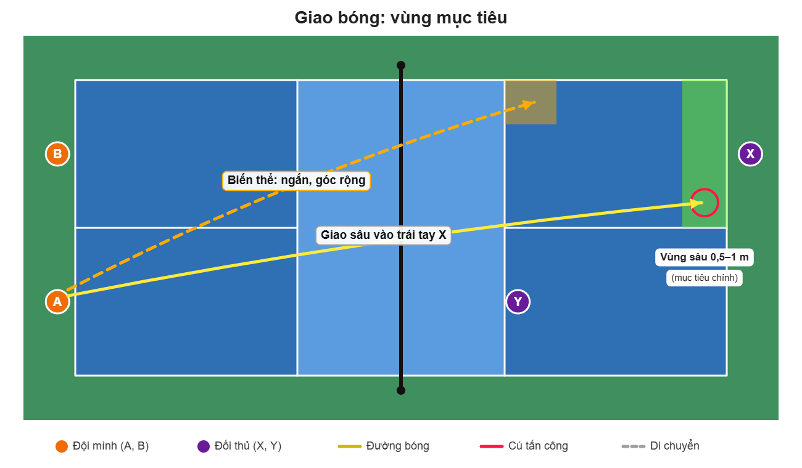
Hình 4. Vùng mục tiêu khi giao bóng (A giao từ ô bên phải).
Mục tiêu: Không mất lượt giao miễn phí, đồng thời đẩy người nhận lùi sâu để cú trả giao bóng kém chất lượng.
Vì sao hiệu quả:
Theo cách tính điểm truyền thống, chỉ bên giao mới ghi điểm. Một lỗi giao bóng là mất cơ hội ghi điểm mà đối thủ không phải làm gì.
Bóng giao sâu buộc người nhận đánh từ sau vạch cuối, khó trả sâu, nên đội mình có cú third shot dễ hơn.
Giao vào trái tay (thường yếu hơn) làm cú trả giao bóng ngắn hoặc cao.
Cách thực hiện:
Khoảng 80% số lần giao: giao sâu, cách vạch cuối khoảng 0,5–1 m, độ cao qua lưới khoảng 1 m cho an toàn.
Trước khi giao, nhìn người nhận: họ đứng lệch về phía nào để che điểm yếu?
Khoảng 20% còn lại: thay đổi (giao ngắn góc rộng, giao xoáy, giao bổng cao chậm) để người nhận không quen nhịp.
Giao xong lùi lại 1 bước sau vạch, đứng ở tư thế chờ: cú trả giao bóng sâu sẽ đến chân bạn.
Ví dụ – Người nhận che trái tay
A giao từ bên phải sang X. A thấy X đứng lệch hẳn sang trái để đánh mọi bóng bằng thuận tay.
A giao sâu, góc rộng ra phía biên ngoài bên phải của X.
X phải chạy ra ngoài biên mới đánh được thuận tay, cú trả bị ngắn và X lên lưới chậm.
A có thời gian chọn cú 3: drive vào khoảng giữa X–Y vì X chưa về kịp.
Phân tích: Người nhận càng cố che một điểm yếu thì càng để lộ một khoảng trống khác. Giao vào khoảng trống đó hiệu quả hơn giao thẳng vào điểm yếu.
Ví dụ – Người nhận đứng quá sâu
Y luôn đứng cách vạch cuối 1–2 m để đón bóng sâu.
A giao bổng, hơi ngắn (rơi khoảng giữa ô giao bóng) và chậm.
Y phải lao lên, đánh trong khi đang di chuyển về trước, cú trả thường cao và ngắn.
A đứng sẵn trong sân, drive cú 3 vào chân Y khi Y đang tiến lên.
Đối thủ phản ứng và cách xử lý:
Người nhận lùi sâu hơn: tăng giao ngắn có chủ đích.
Người nhận chạy vòng để đánh thuận tay: giao thẳng vào người (vào hông) để họ không kịp xoay.
Sai lầm thường gặp: Giao mạnh, sát biên khi tỷ số đang sát (ví dụ 9–9); giao mãi một kiểu khiến đối thủ quen nhịp.
16.2. Trả giao bóng và tiến lên lưới
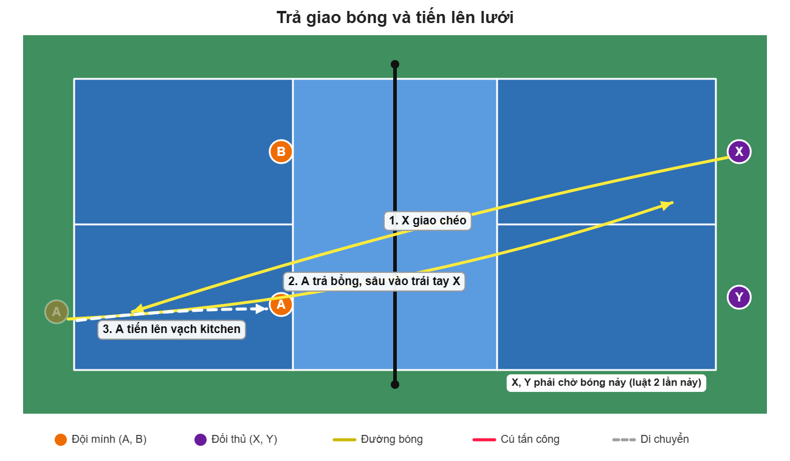
Hình 5. Bên nhận trả sâu rồi lên lưới ngay; bên giao phải chờ bóng nảy.
Mục tiêu: Biến lợi thế của bên nhận thành việc chiếm lưới ngay từ cú thứ 2.
Vì sao hiệu quả:
Luật 2 lần nảy khiến bên giao bóng phải đứng cuối sân chờ bóng nảy, còn bên nhận được lên lưới ngay sau cú trả.
Cú trả sâu và bổng cho người trả nhiều thời gian chạy lên. Cú trả mạnh nhưng thấp lại quay về nhanh, người trả chưa kịp lên.
Cách thực hiện:
Đứng sau vạch cuối khoảng 0,5–1 m để bóng sâu không ép được bạn.
Trả bổng, sâu, ưu tiên vào trái tay người giao hoặc vào người yếu hơn. Nhắm vào khoảng giữa sâu nếu chưa chắc.
Đánh xong đi thẳng lên vạch kitchen. Khi đối thủ đánh cú 3 thì dừng lại, split step, rồi đi tiếp.
Đồng đội (đã đứng ở vạch kitchen) giữ vợt cao, sẵn sàng vô lê cú 3 nếu bóng cao.
Ví dụ – Trả sâu vào trái tay người giao
X giao sâu vào A.
A trả bổng sâu vào trái tay X, bóng rơi cách vạch cuối khoảng 1 m.
X phải đánh cú 3 bằng trái tay từ sau vạch cuối, rất khó drop thấp. Cú drop của X hơi cao.
Lúc này A đã tới vạch kitchen cạnh B. B đánh roll volley xuống chân Y đang tiến lên.
Y phải nâng bóng lên, A đập vào khoảng giữa X–Y. Đội A ghi lại lượt giao.
Phân tích: Cú trả không ghi điểm trực tiếp, nhưng tạo ra một chuỗi bóng bất lợi cho đối thủ: cú 3 khó → bóng cao → mình tấn công.
Đối thủ phản ứng và cách xử lý:
Bên giao drive cú 3 thật mạnh vào người đang chạy lên: trả sâu hơn để có thêm thời gian, và split step đúng lúc rồi block.
Bên giao lob qua người trả: đồng đội ở lưới hô "Lob" và đổi vị trí.
Sai lầm thường gặp: Trả xong đứng lại xem bóng; cố trả sát biên hoặc quá mạnh nên hỏng, mất điểm miễn phí.
16.3. Third shot: chọn drop, drive hay lob
Mục tiêu: Giúp đội giao bóng vượt qua giai đoạn bất lợi và tiến lên lưới.
Vì sao hiệu quả:
Sau cú trả, bên nhận thường đã đứng cả hai người ở lưới, còn bên giao vẫn ở cuối sân. Cú 3 quyết định bên giao có lên được lưới hay không.
Cách thực hiện:
Nhìn cú trả: sâu hay ngắn, thấp hay cao? Đối thủ đã đứng vững ở lưới chưa?
Chọn theo bảng dưới đây.
Đánh xong, chỉ tiến lên nếu cú đánh tốt; nếu không, giữ vị trí và chuẩn bị cho cú 5.
Tình huống cú trả
Lựa chọn
Mục tiêu nhắm
Sâu, thấp; cả hai đối thủ đã ở lưới
Drop
Vào giữa kitchen hoặc trái tay của người bên phải đối thủ.
Ngắn hoặc nảy cao; mình đứng trong sân
Drive
Vào chân người đang tiến lên, hoặc vào khoảng giữa.
Người trả vẫn đang chạy, còn ở giữa sân
Drive
Thẳng vào chân người đó.
Đối thủ đứng sát lưới, nghiêng người về trước
Lob (thỉnh thoảng)
Qua trái tay của đối thủ.
Mình bị kéo ra ngoài, mất thăng bằng
Drop bổng an toàn vào giữa
Mua thời gian, chưa tiến lên.
Ví dụ – Drive rồi drop (kết hợp cú 3 và cú 5)
Y trả giao bóng hơi ngắn, nảy cao vào thuận tay A.
A drive cú 3 mạnh, có topspin, vào chân Y đang chạy lên.
Y block được nhưng bóng bổng vừa phải qua lưới.
Thay vì drive tiếp (đối thủ đã đứng vững, sẽ dễ counter), A đánh cú 5 là drop nhẹ vào kitchen.
Bóng thấp, A và B tiến lên vạch kitchen. Điểm chuyển sang thế dink cân bằng.
Phân tích: Drive dùng để ép đối thủ đánh bóng yếu. Ngay khi có bóng chậm thì chuyển sang drop để lên lưới. Đây là cách nhiều người chơi trình 4.0+ dùng để vừa gây áp lực vừa an toàn.
Sai lầm thường gặp: drive vào người đã đứng vững ở lưới với vợt cao (họ chỉ cần block hoặc counter); drop xong lao lên ngay dù bóng drop bị cao.
16.4. Vượt vùng chuyển tiếp (đi từng bước)
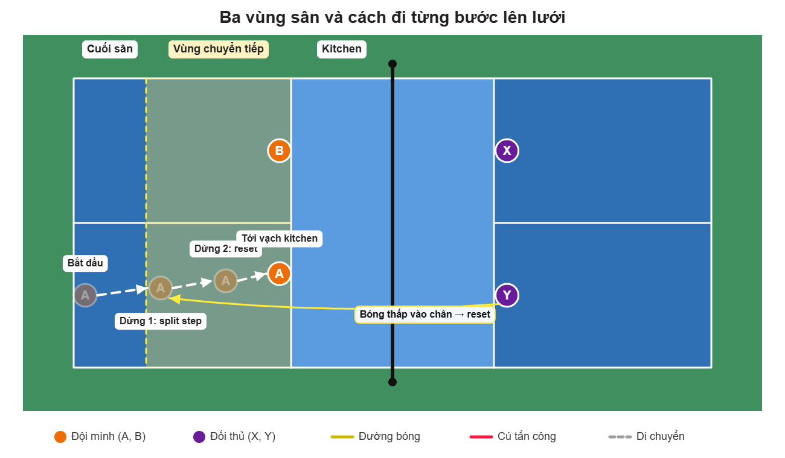
Hình 6. Đi từng bước qua vùng chuyển tiếp, dừng lại split step mỗi khi đối thủ chạm bóng.
Mục tiêu: Tiến từ cuối sân lên lưới mà không bị đánh vào chân.
Vì sao hiệu quả:
Vùng giữa sân là nơi bóng đối thủ dễ rơi trúng chân bạn nhất. Đi từng bước, dừng đúng lúc giúp bạn luôn cân bằng khi chạm bóng.
Cách thực hiện:
Sau cú drop tốt, tiến 2–3 bước.
Khi đối thủ chuẩn bị chạm bóng: dừng lại, split step, vợt trước người.
Bóng thấp tới chân → reset nhẹ vào kitchen rồi tiến tiếp. Bóng cao → tấn công hoặc vô lê chắc.
Lặp lại cho tới vạch kitchen. Thường cần 2–3 "nhịp".
Ví dụ – Lên lưới sau 3 nhịp
A drop cú 3 vào kitchen, khá thấp. A và B cùng tiến 3 bước.
X dink chéo vào chân A. A dừng, split step, reset nhẹ vào giữa kitchen.
A và B tiến thêm 2 bước. Y đánh vô lê nhẹ xuống chân B.
B dùng block mềm, bóng rơi vào kitchen. Cả hai lên tới vạch kitchen.
Phân tích: Không cú nào ghi điểm, nhưng sau 3 nhịp, đội A đã cân bằng thế trận mà không mất điểm nào.
Đối thủ phản ứng và cách xử lý:
Đối thủ đánh mạnh vào người đang tiến: dừng lại sớm hơn, block thay vì cố reset.
Sai lầm thường gặp: Chạy khi đối thủ đang đánh (bóng đến lúc đang chạy rất khó xử lý); đứng mãi ở giữa sân không dám tiến.
16.5. Đánh vào giữa
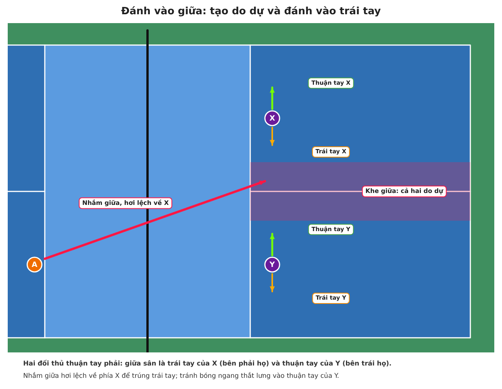
Hình 6a. Khe giữa và vị trí thuận tay, trái tay của hai đối thủ.
Mục tiêu: Gây do dự giữa hai đối thủ và giảm góc đánh của họ.
Vì sao hiệu quả:
Hai người đều có thể đánh, nên dễ nhường nhau hoặc cùng vươn vợt.
Lưới thấp nhất ở giữa (khoảng 86 cm so với 91 cm ở cột), nên ít rủi ro chạm lưới.
Bóng từ giữa sân khó đánh trả với góc rộng, nên đội mình dễ che sân hơn.
Cách thực hiện:
Khi chưa có cơ hội rõ ràng: mặc định đánh vào giữa.
Với hai đối thủ thuận tay phải, giữa sân là thuận tay của người bên trái. Vì vậy nên nhắm "giữa hơi lệch về phía người bên phải" để trúng trái tay người đó.
Sau khi đánh giữa vài lần, đối thủ chụm lại → hai biên mở ra.
Ví dụ – Giữa để mở biên
Ở thế dink, A dink 2 quả vào giữa. X và Y đều dịch vào giữa để che.
Y dink trả hơi cao về phía B.
B speed-up dọc biên trái của đối thủ (phía Y), vào khoảng trống Y vừa bỏ lại.
Phân tích: Đánh vào giữa ở đây không để ghi điểm mà để kéo đối thủ chụm lại, mở biên cho cú kết thúc.
Đối thủ phản ứng và cách xử lý:
Đối thủ có quy ước rõ ai nhận bóng giữa: đánh giữa ít tác dụng gây nhầm lẫn, nhưng vẫn dùng để thu hẹp góc và mở biên.
Sai lầm thường gặp: Đánh giữa ngang thắt lưng vào thuận tay người bên trái: đó là bóng họ thích nhất.
16.6. Đánh vào chân
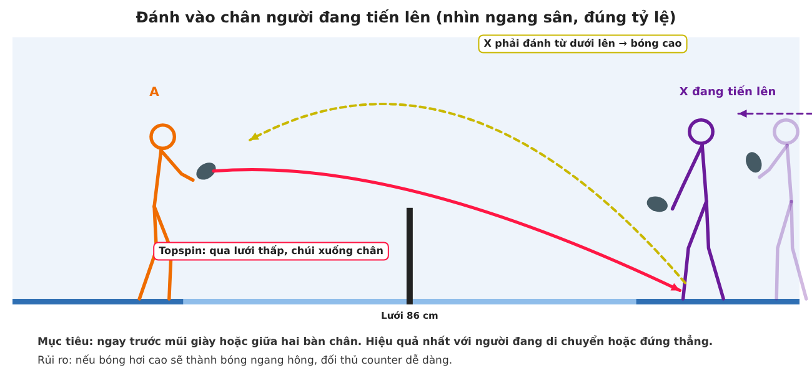
Hình 6b. Bóng topspin chúi xuống chân người đang tiến lên.
Mục tiêu: Buộc đối thủ đánh bóng từ dưới lên, tạo bóng cao cho đội mình tấn công.
Vì sao hiệu quả:
Bóng ở chân phải đánh từ dưới lên, rất khó đánh xuống hoặc đánh mạnh.
Người đang di chuyển (ở vùng chuyển tiếp) không kịp hạ người.
Người đứng thẳng, gối không khuỵu gần như chắc chắn sẽ đánh bóng cao.
Cách thực hiện:
Chọn đúng người: người đang tiến lên hoặc đứng thẳng.
Dùng drive có topspin, roll volley hoặc dink topspin để bóng chúi xuống nhanh.
Nhắm ngay trước mũi giày hoặc giữa hai bàn chân.
Ngay sau đó chuẩn bị tấn công bóng trả về.
Ví dụ – Ép người đang tiến lên
X giao, A trả giao bóng sâu rồi cùng B đứng ở lưới.
X đánh cú 3 là drop rồi cùng Y tiến lên.
Cú drop hơi cao. B roll volley xuống chân X vừa chạy tới giữa sân.
X phải nâng bóng lên ngang ngực B.
A (đã lên tới lưới) đi ngang chặn, đập xuống giữa X–Y.
Đối thủ phản ứng và cách xử lý:
Đối thủ dừng lại giữa sân và hạ người thấp: đổi sang dink sâu sát chân rồi dink ngắn, kéo họ mất thăng bằng.
Sai lầm thường gặp: Đánh vào chân nhưng bóng hơi cao, thành bóng ngang hông, đối thủ counter dễ dàng.
16.7. Kiểm soát hướng bóng: chéo sân và dọc dây
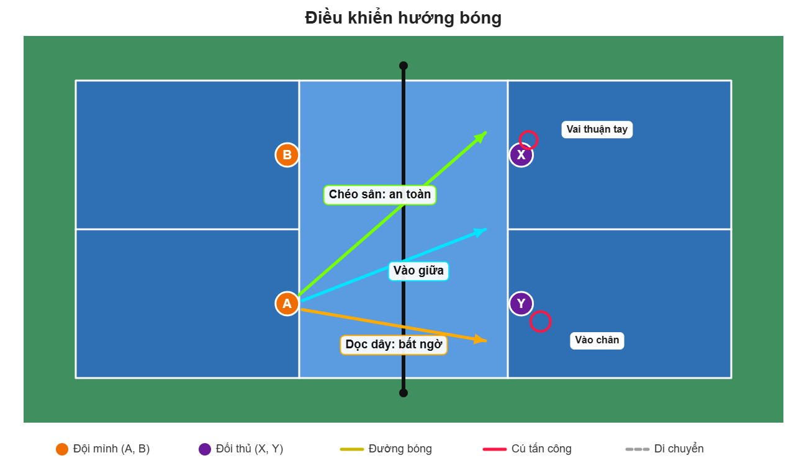
Hình 7. Các hướng đánh từ vị trí của A và các mục tiêu trên người đối thủ.
Mục tiêu: Biết khi nào an toàn, khi nào mạo hiểm có tính toán.
Vì sao hiệu quả:
Đường chéo ở kitchen dài hơn đường thẳng khoảng 20–25%, lại đi qua phần lưới thấp, nên chéo sân là lựa chọn an toàn.
Dọc dây ngắn hơn, qua phần lưới cao hơn, nên rủi ro hơn, nhưng thường bất ngờ và đánh vào khoảng trống.
Cách thực hiện:
Nguyên tắc: "Chéo để chờ cơ hội, dọc dây để tấn công".
Bị kéo ra biên → trả chéo để có thời gian về vị trí.
Người đối diện dịch vào giữa (để poach hoặc che) → dọc dây vào biên họ vừa bỏ trống.
Hướng bóng bằng mặt vợt, vai và chân, không bằng cổ tay. Chọn mục tiêu nhỏ, cụ thể.
Ví dụ – Chéo chờ, dọc dây kết thúc
A và X dink chéo với nhau 4 quả.
Y bắt đầu dịch dần vào giữa, chực poach bóng chéo.
X dink hơi cao vào thuận tay A.
A speed-up thẳng dọc dây phía Y, vào khoảng trống Y vừa bỏ lại sát biên.
Phân tích: Dink chéo khiến Y tin rằng bóng sẽ tiếp tục đi chéo. Khi Y rời vị trí, đường dọc dây trở thành khoảng trống lớn nhất trên sân.
Đối thủ phản ứng và cách xử lý:
Nếu đối thủ chặn được dọc dây (do đứng đúng chỗ), tiếp tục chéo để chờ thêm.
Sai lầm thường gặp: Đánh dọc dây khi đang mất thăng bằng; đánh dọc dây quá mềm, mở đường cho đối thủ erne.
Bảng tóm tắt các hướng đánh:
Hướng
Ưu điểm
Rủi ro
Khi nào dùng
Chéo sân
Đường bóng dài nhất, lưới thấp nhất ở giữa, an toàn nhất.
Đối thủ chéo dễ đoán.
Mặc định cho dink, drop và drive khi chưa có cơ hội.
Dọc dây (down the line)
Bất ngờ, đánh vào khoảng trống hai bên biên.
Đường bóng ngắn, lưới cao hơn ở biên, dễ ra ngoài.
Khi đối thủ dịch vào giữa hoặc bị kéo lệch.
Vào giữa
Gây lúng túng "ai đánh?", góc trả bóng của đối thủ bị thu hẹp.
Ít khi trực tiếp ghi điểm.
Khi chưa chắc chắn, đặc biệt ở third shot và khi phòng thủ.
Vào chân
Đối thủ phải đánh bóng từ dưới lên, khó tấn công lại.
Nếu bóng hơi cao sẽ thành bóng đẹp cho đối thủ.
Drive, speed-up, roll volley vào người đang tiến lên hoặc đang đứng cao.
Vào vai vợt / hông
Điểm khó xử lý nhất trên cơ thể, phải chọn thuận hay trái tay.
Cần độ chính xác cao.
Speed-up, flick, counter ở lưới.
16.8. Xây dựng điểm bằng dink
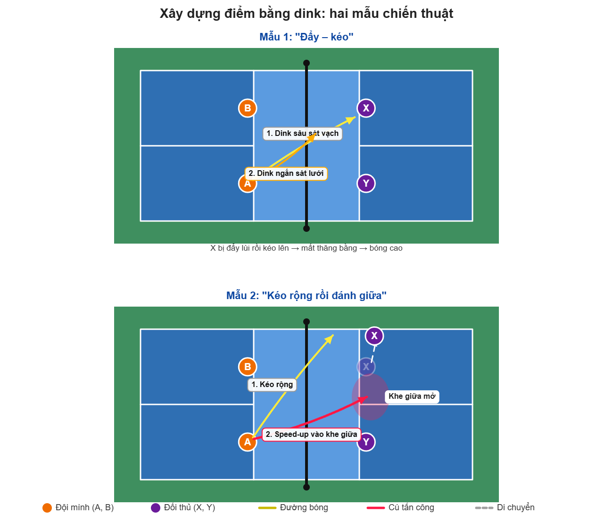
Hình 8. Hai mẫu xây dựng điểm bằng dink.
Mục tiêu: Kéo đối thủ khỏi vị trí cho tới khi có một bóng cao để tấn công.
Vì sao hiệu quả:
Ở trình 3.5+, phần lớn điểm được quyết định ở lưới. Người kiên nhẫn hơn và dink chính xác hơn thường thắng.
Cách thực hiện:
Kiên nhẫn: chuẩn bị tâm lý cho 8–15 quả dink.
Mỗi quả dink có mục đích: đẩy sâu, kéo ngắn, kéo rộng, vào chân, vào trái tay.
Chỉ tấn công khi có đủ điều kiện (xem 16.20).
Ví dụ – Mẫu "đẩy – kéo"
A dink sâu, rơi sát vạch kitchen phía X → X phải lùi trọng tâm.
A dink ngắn, sát lưới → X phải lao người lên, mất thăng bằng.
X dink trả hơi cao.
A speed-up vào vai phải của X.
Ví dụ – Mẫu "ép trái tay"
A dink chéo liên tục vào trái tay X (với X bên phải, trái tay ở phía giữa).
Sau 5–6 quả, X bắt đầu dink cao dần vì trái tay yếu.
A topspin dink vào chân X, X nâng bóng lên.
B poach sang giữa vô lê xuống chân Y.
Ví dụ – Mẫu "kéo rộng rồi đánh giữa"
A dink chéo góc rộng, kéo X ra ngoài biên.
Khe giữa X và Y mở ra.
Bóng X trả về hơi cao, A speed-up vào khe giữa.
Đối thủ phản ứng và cách xử lý:
Đối thủ dink chính xác như mình: đổi nhịp bằng một quả topspin dink hoặc dink dọc dây để phá thế.
Sai lầm thường gặp: Dink bổng cao; thay đổi hướng liên tục mà không có ý đồ; tấn công bóng thấp.
16.9. Speed-up: tăng tốc đúng lúc
Mục tiêu: Chuyển từ thế cân bằng sang tấn công mà không tự tạo bóng cho đối thủ counter.
Vì sao hiệu quả:
Một cú speed-up tốt khiến đối thủ chỉ có thể block, thường là block lên cao, đội mình kết thúc ở cú tiếp theo.
Cách thực hiện:
Chỉ speed-up khi có đủ 3 điều kiện: bóng từ ngang gối trở lên; mình cân bằng; đối thủ chưa sẵn sàng (vợt thấp hoặc mất thăng bằng).
Mục tiêu tốt nhất: vai thuận tay của đối thủ (vai phải với người thuận tay phải). Ở đó họ phải gập khuỷu tay rất khó chịu. Mục tiêu thứ hai: hông, hoặc dọc biên.
Đánh ngắn, gọn, có topspin, không vung lớn.
Ngay sau cú speed-up: vợt lên trước ngực, chuẩn bị cho đòn counter.
Ví dụ – Speed-up vào vai thuận tay
A và Y dink thẳng với nhau (Y đối diện A).
Y dink hơi cao, bóng nảy ngang gối A. Y đang để vợt thấp sau cú dink.
A speed-up thẳng vào vai phải Y.
Y gập khuỷu tay, block lên cao.
B đứng sẵn, vô lê đập xuống chân X.
Phân tích: Điều quan trọng không phải là độ mạnh mà là mục tiêu và thời điểm: Y đang vợt thấp và bóng nhắm vào điểm khó nhất trên cơ thể.
Đối thủ phản ứng và cách xử lý:
Đối thủ counter tốt: speed-up thấp hơn, nhắm vào hông hoặc chân thay vì vai; hoặc giảm tần suất.
Sai lầm thường gặp: Speed-up bóng thấp (bóng bay lên); speed-up vào người đang để vợt cao và sẵn sàng.
Chiến thuật speed-up chuyên sâu. Các mục 16.9.1–16.9.8 dưới đây phân tích chi tiết: nhắm vào đâu, đánh hướng nào, các mẫu speed-up, phối hợp sau khi speed-up, đấu vô lê nhanh, cách khiến đối thủ speed-up sai và bài tập.
16.9.1. Chọn mục tiêu speed-up
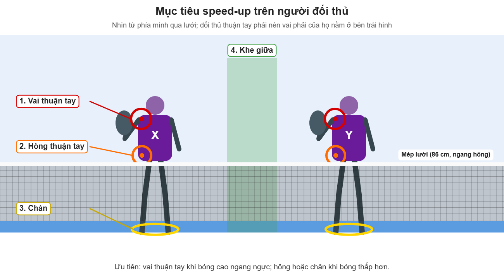
Hình 8a. Bốn mục tiêu speed-up trên người đối thủ.
Mục tiêu
Vì sao hiệu quả
Khi nào dùng
1. Vai thuận tay (vai phải của người thuận tay phải)
Đối thủ phải gập khuỷu tay lại sát người (kiểu "cánh gà"), rất khó đánh mạnh trở lại, thường chỉ block lên cao.
Mục tiêu mặc định khi bóng mình đánh được ở tầm thắt lưng đến ngực.
2. Hông thuận tay
Đối thủ phân vân giữa thuận tay và trái tay; bóng sát người khó xoay vợt kịp.
Khi bóng thấp hơn một chút (ngang gối đến thắt lưng), speed-up đi thấp hơn.
3. Chân
Đối thủ phải đánh từ dưới lên, gần như không counter được.
Khi đối thủ đứng thẳng, đang di chuyển; dùng roll volley hoặc topspin.
4. Khe giữa
Hai người do dự, góc trả bóng hẹp.
Khi hai đối thủ đứng xa nhau hoặc chưa thống nhất ai nhận bóng giữa.
5. Dọc biên
Đánh vào khoảng trống.
Khi người đối diện rời biên để poach hoặc dịch vào giữa.
Nên tránh: speed-up vào trái tay ngang ngực của người đang để vợt sẵn (trái tay block rất dễ), hoặc vào người có vợt cao đang chờ. Với người thuận tay trái, đổi "vai phải" thành "vai trái".
16.9.2. Chọn hướng: thẳng, chéo hay vào giữa
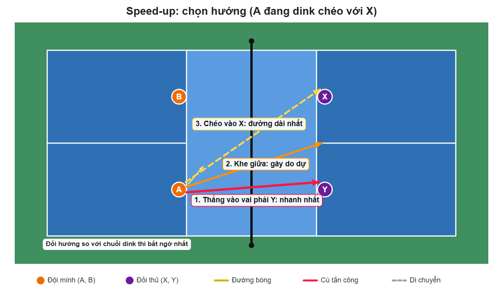
Hình 8b. Ba hướng speed-up khi A đang dink chéo với X.
Hướng
Ưu điểm
Nhược điểm
Dùng khi
Thẳng vào người đối diện
Đường ngắn nhất, đối thủ có ít thời gian phản ứng nhất.
Người đối diện có thể đang chờ sẵn.
Người đối diện thả lỏng, hạ vợt hoặc vừa đánh cú yếu.
Vào khe giữa
Gây do dự, góc trả bóng hẹp.
Có thể rơi vào thuận tay của người bên trái đối thủ.
Hai đối thủ đứng xa nhau.
Chéo vào người đang dink với mình
Người đó đang hạ thấp để dink.
Đường dài nhất, cho đối thủ thêm thời gian; người còn lại có thể chặn.
Người đó vừa vươn người, mất thăng bằng.
Dọc biên
Khoảng trống lớn.
Lưới ở biên cao hơn, dễ ra ngoài.
Người đối diện vừa rời vị trí.
Đổi hướng so với chuỗi dink: đang dink chéo thì speed-up thẳng; đang dink thẳng thì speed-up vào giữa. Đối thủ đã quen với hướng bóng cũ nên phản ứng chậm hơn.
Từ bóng đã nảy hay vô lê? Speed-up bằng vô lê (không để bóng nảy) lấy đi nhiều thời gian của đối thủ hơn nhưng khó hơn. Speed-up từ bóng đã nảy chỉ nên làm khi bóng nảy cao ít nhất ngang gối.
Bóng quá sát lưới: dù cao vẫn khó speed-up vì góc đánh hẹp; dùng cú đẩy ngắn vào chân thay vì đánh mạnh.
16.9.3. Các mẫu speed-up
Mẫu 1 – Dink chéo, speed-up thẳng
A và X dink chéo 4–5 quả.
Y (đối diện A) không tham gia, dần thả lỏng và hạ vợt.
X dink hơi cao, bóng nảy ngang gối A.
A speed-up thẳng vào vai phải của Y.
Y gập tay block lên cao, B đập kết thúc.
Phân tích: Người đứng ngoài chuỗi dink thường mất tập trung. Đổi hướng cộng với đường bóng ngắn khiến Y gần như không kịp phản ứng.
Mẫu 2 – Dink vào chân, speed-up bóng trả về
A dink topspin vào chân X.
X phải nâng bóng, bóng bay tới ngang hông A.
A speed-up vào hông phải của X.
Phân tích: Cú dink đầu tiên là cú "chuẩn bị". Speed-up chỉ là cú kết thúc khi đã có bóng thuận lợi.
Mẫu 3 – Giả speed-up (fake) rồi dink
A làm động tác kéo vợt như sắp speed-up.
X và Y nâng vợt, dồn trọng tâm ra sau để chờ đỡ.
A chỉ đẩy một cú dink nhẹ, sát lưới.
X phải lao người lên, đánh bóng cao.
A speed-up thật vào vai X.
Mẫu 4 – Speed-up bằng vô lê từ cú dink bổng
X dink hơi bổng, bóng chưa nảy đã tới ngang thắt lưng A.
A không để bóng nảy mà vô lê nhanh, ngắn vào vai phải của Y.
Phân tích: Đây là cách speed-up khiến đối thủ có ít thời gian nhất, nhưng cần vợt sẵn sàng và cú đánh thật gọn.
Mẫu 5 – Speed-up vào người đang di chuyển
Y vừa reset từ giữa sân và đang tiến lên vạch kitchen.
Bóng của Y hơi cao.
A speed-up thẳng xuống chân Y khi Y còn đang bước.
16.9.4. Sau khi speed-up: phối hợp với đồng đội
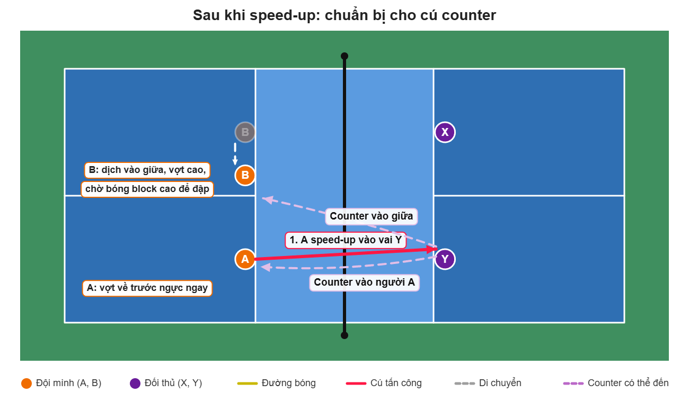
Hình 8c. Vị trí của A và B ngay sau cú speed-up.
Người vừa speed-up: không vung theo đà, đưa vợt về trước ngực ngay, đứng vững, không lao lên.
Đồng đội: ngay khi thấy speed-up, nâng vợt và dịch nhẹ vào giữa. Phần lớn cú counter đi vào giữa hoặc vào người vừa speed-up.
Bóng block cao trả về: ai gần và có vợt cao hơn thì đập, gọi "Tôi" rõ ràng.
Đối thủ counter xuống chân: không cố đánh mạnh tiếp, block mềm hoặc reset để đưa điểm về thế dink.
16.9.5. Đấu vô lê nhanh sau speed-up (hands battle)
Người thắng thường là người có vợt sẵn trước, vung ngắn hơn và đánh xuống thấp hơn.
Đánh xuống (vào chân, hông) thắng đánh lên: ai phải đánh từ dưới lên thường thua ở cú tiếp theo.
Khi đứng chờ, đầu vợt hơi nghiêng về phía trái tay vì trái tay che được phần lớn thân người.
Nhắm vào người phản xạ chậm hơn trong cặp đối thủ.
Pha đấu thường kết thúc sau 2–4 chạm. Nếu sau 3 chạm mình vẫn phải đánh từ dưới lên, hãy block mềm hoặc reset để thoát.
Không lùi lại khi đấu vô lê: lùi làm bóng tới thấp hơn và khó xử lý hơn.
16.9.6. Phòng thủ chủ động: khiến đối thủ speed-up sai
Dink thấp và sâu (bóng nảy dưới gối đối thủ): họ chỉ có thể speed-up bóng thấp, dễ hỏng hoặc bay lên.
Vợt cao trước ngực khi đứng ở lưới: đối thủ thấy bạn sẵn sàng sẽ ngại speed-up.
Dụ speed-up: dink vào thuận tay của người nóng vội nhưng thật thấp. Họ speed-up bóng thấp, bóng tới bạn ở tầm ngực, bạn counter xuống chân.
Đứng sát vạch, gối khuỵu: bóng speed-up tới bạn thường ở tầm ngực, dễ counter hơn.
Quan sát game đầu: ai hay speed-up, speed-up hướng nào, để chuẩn bị trước.
Ví dụ – Dụ đối thủ speed-up
A biết X thích speed-up thuận tay.
A dink chéo vào thuận tay X nhưng rất thấp, bóng nảy dưới gối.
X vẫn speed-up, bóng phải đi lên và tới ngực A.
A đã sẵn vợt, counter xuống chân X. X không kịp, mất điểm.
16.9.7. Bài tập speed-up
Bài tập
Cách làm
Mục tiêu đo được
Đèn xanh
Bạn tập đút bóng dink ở các độ cao ngẫu nhiên. Bạn chỉ speed-up bóng từ ngang gối trở lên; các bóng khác dink lại.
Không speed-up bóng thấp; 8/10 bóng "xanh" được speed-up đúng mục tiêu.
Mục tiêu trên người
Bạn tập dán băng màu ở vai phải và hông. Speed-up với lực vừa phải, tập trung vào độ chính xác.
7/10 quả trúng mục tiêu.
Dink đến 11 có speed-up
1 đấu 1 dink chéo, được speed-up bất cứ lúc nào, tính điểm như đánh trận.
Tỷ lệ speed-up thắng điểm trên 50%.
Counter lại counter
2 đấu 2 ở lưới. Một bên speed-up, hai bên đấu vô lê tối đa 5 chạm.
Thắng nhiều hơn ở chạm thứ 3–4.
Giả speed-up
Trong mỗi game dink, dùng ít nhất 3 lần giả speed-up rồi dink.
Đối thủ trả bóng cao sau cú giả.
Thống kê trận
Đếm số lần speed-up, số lần thắng điểm, số lần hỏng.
Theo dõi tỷ lệ thắng mỗi tuần.
16.9.8. Checklist trước khi speed-up
Bóng có ngang gối trở lên và không quá sát lưới không?
Mình có cân bằng, chân đã dừng chưa?
Đã chọn mục tiêu chưa (vai thuận tay, hông, chân, khe giữa)?
Đối thủ có đang hạ vợt hoặc mất thăng bằng không?
Mình và đồng đội đã sẵn sàng cho cú counter chưa?
Đủ 4–5 câu "có" thì speed-up. Thiếu từ 2 câu trở lên thì dink tiếp hoặc dùng roll volley.
16.10. Roll volley và flick
Mục tiêu: Hai cách tấn công tinh tế hơn speed-up, ít rủi ro bị counter hơn.
Vì sao hiệu quả:
Roll volley có topspin, bóng chúi xuống chân, đối thủ phải nâng bóng.
Flick được giấu trong tư thế dink, đối thủ không kịp phản ứng.
Cách thực hiện:
Roll volley: dùng khi bóng tới ngang thắt lưng, chưa đủ cao để đập. Vô lê đẩy từ dưới lên, tạo topspin, nhắm chân đối thủ.
Flick: dùng khi bóng dink nảy ngang gối, gần lưới. Chuẩn bị y hệt cú dink, đến lúc chạm bóng mới bật cổ tay về trước.
Ví dụ – Roll volley
X dink chéo hơi bổng về phía A, bóng chưa nảy đã tới ngang thắt lưng A.
A không để bóng nảy mà roll volley chéo xuống chân X.
X phải đánh từ chân lên, bóng cao.
A hoặc B kết thúc.
Ví dụ – Flick trái tay
X dink chéo vào trái tay A, bóng nảy cao ngang gối.
X đang hạ người thấp và nghiêng về trước sau cú dink.
A làm động tác như dink trái tay, rồi flick bật cổ tay, bóng bay thẳng vào vai phải X.
X không kịp đưa vợt lên, bóng chạm người hoặc block lỗi.
Đối thủ phản ứng và cách xử lý:
Đối thủ biết bạn hay flick, họ đứng cao vợt: dink thấp hơn, chờ họ mất kiên nhẫn.
Sai lầm thường gặp: Flick bóng thấp dưới mép lưới (bóng vào lưới hoặc bay lên dễ đập); lộ ý đồ bằng cách lùi vợt ra sau.
16.11. Phòng thủ: chọn block, reset hay counter
Mục tiêu: Sống sót qua đợt tấn công và đưa điểm về thế cân bằng hoặc lật ngược thế trận.
Vì sao hiệu quả:
Phần lớn điểm bị mất khi phòng thủ là do chọn sai cú (counter bóng thấp, reset bóng cao), không phải do kỹ thuật kém.
Bóng tới đâu, mình ở đâu
Chọn cú
Cách đánh
Bóng mạnh vào thân, mình chưa kịp chuẩn bị
Block
Vợt trước ngực, mặt vợt hơi hướng xuống, gần như không vung.
Bóng thấp tới chân, mình ở giữa sân
Reset
Cầm lỏng tay, mặt vợt mềm, đưa bóng vào kitchen.
Bóng ngang ngực–vai, vợt đã sẵn sàng
Counter
Vung ngắn, đánh ngược xuống chân hoặc vai đối thủ.
Bóng lob qua đầu, sâu
Chạy về, lob trả hoặc drop bổng
Mua thời gian để về lại vị trí.
Ví dụ 1 – Đấu vô lê nhanh (hands battle)
X speed-up vào vai A.
Vợt A đã ở trước ngực nên A counter ngay, xuống chân X.
X phải block từ dưới lên, bóng cao.
B đập kết thúc.
Phân tích: A thắng vì để vợt sẵn sàng và đánh xuống thấp, chứ không phải vì đánh mạnh hơn.
Ví dụ 2 – Reset khi bị ép ở giữa sân
A đang ở giữa sân. Y drive mạnh vào chân A.
A không cố đánh trả mạnh. A hạ người, cầm lỏng tay, reset bóng nhẹ vào giữa kitchen.
Y phải dink lại, A có thời gian tiến lên.
Vị trí vợt khi phòng thủ: trước ngực, đầu vợt hơi nghiêng về phía trái tay, vì trái tay che được phần lớn thân người.
Sai lầm thường gặp: counter bóng thấp hơn mép lưới; cầm vợt quá chặt khi reset nên bóng bật cao.
16.12. Di chuyển và giao tiếp trong đánh đôi
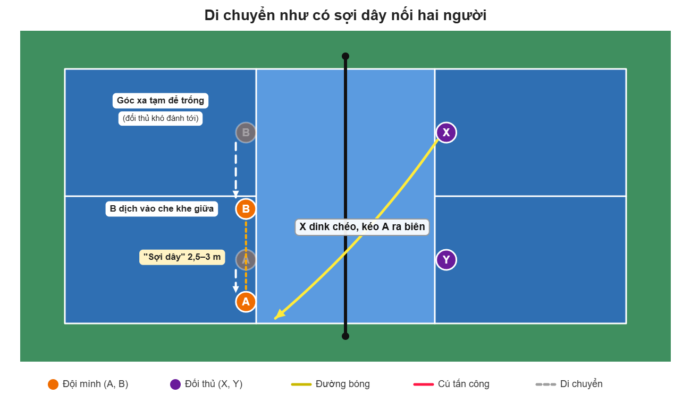
Hình 9. Khi bóng kéo A ra biên, B dịch theo để che khe giữa.
Mục tiêu: Hai người che sân như một khối, không để khe hở.
Cách thực hiện:
Sợi dây 2,5–3 m: hai người luôn giữ khoảng cách như có sợi dây nối. Cùng tiến, cùng lùi, cùng dịch trái phải.
Dịch theo bóng: khi bóng ở biên của một người, người đó che biên, người kia dịch vào che giữa. Góc xa nhất thường để trống vì đối thủ khó đánh tới đó.
Quy ước bóng giữa: thống nhất trước trận. Phổ biến nhất: người có thuận tay ở giữa nhận, hoặc người đang đánh chéo với đối thủ nhận.
Gọi bóng: "Tôi", "Bạn", "Ra" (bóng ra ngoài), "Để" (để bóng nảy), "Lob", "Đổi". Gọi sớm, to, rõ.
Giữa các điểm: trao đổi một câu ngắn ("đánh vào trái tay Y", "mình stack bên trái").
Ví dụ – Dịch theo bóng
X dink chéo góc rộng ra biên phải của A.
A dịch ra biên để đánh. B dịch theo sang phải, đứng ở khe giữa.
X dink tiếp vào giữa, B đã sẵn ở đó và xử lý.
Sai lầm thường gặp: Một người đi, một người đứng yên, tạo khe hở lớn ở giữa; không gọi bóng nên hai người cùng đánh hoặc cùng bỏ.
16.13. Poach (cướp bóng)
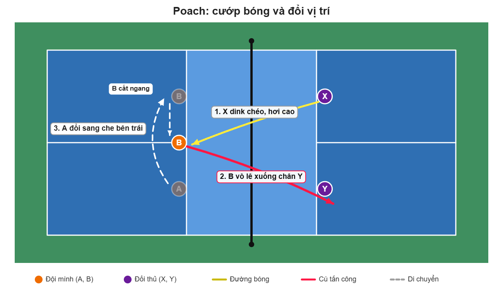
Hình 10. B cắt ngang vô lê, A lập tức đổi sang che bên trái.
Mục tiêu: Người không bị nhắm tới chủ động sang chặn bóng để tấn công.
Vì sao hiệu quả:
Đối thủ thường đánh chéo theo thói quen. Một cú poach bất ngờ khiến họ phải lo cả hai người, mất tự tin khi dink chéo.
Cách thực hiện:
Chỉ poach bóng đủ cao để đánh xuống, đi về giữa hoặc vào phía mình.
Thời điểm: khi đối thủ đã cam kết đánh (đang vung vợt), không đi quá sớm.
Đi chéo về phía trước, đánh xuống chân hoặc vào khoảng trống.
Đồng đội lập tức dịch sang che phần sân người poach bỏ lại.
Có thể dùng tín hiệu tay sau lưng trước khi giao bóng để báo ý định poach.
Ví dụ – Poach khi dink chéo
A và X dink chéo nhiều quả. Y dần thả lỏng vì bóng không về phía mình.
X dink chéo hơi bổng.
B (đứng bên trái) đi ngang sang giữa, vô lê bóng trước khi tới A, đánh xuống chân Y.
A dịch sang trái che vị trí của B.
Y không kịp phản ứng vì đang thả lỏng.
Đối thủ phản ứng và cách xử lý:
Đối thủ đánh dọc dây vào khoảng trống người poach để lại: chỉ poach khi bóng cao, và đồng đội luôn sẵn sàng đổi.
Sai lầm thường gặp: Poach nửa vời (chạy sang rồi bỏ); poach bóng thấp; không báo đồng đội.
16.14. Stack (xếp vị trí)
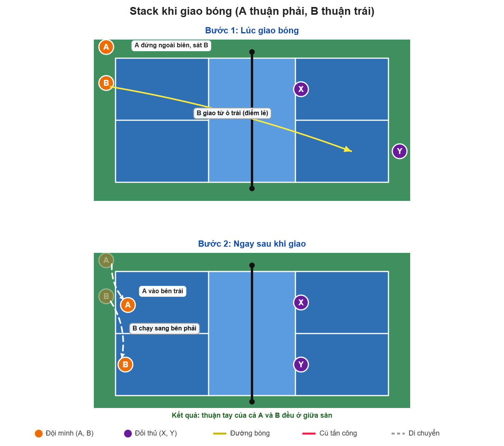
Hình 11. Stack khi giao bóng để cả hai người đều có thuận tay ở giữa sân.
Mục tiêu: Giữ mỗi người ở bên sân phát huy điểm mạnh, hoặc giấu điểm yếu.
Vì sao hiệu quả:
Theo luật, chỉ người giao và người nhận phải đứng đúng ô. Sau khi bóng được đánh, mọi người được di chuyển tự do.
Cách thực hiện:
Chọn bên: ví dụ A thuận tay phải, B thuận tay trái. Nếu A đứng trái và B đứng phải thì thuận tay của cả hai đều ở giữa sân.
Khi giao bóng: người giao giao từ đúng ô theo tỷ số; đồng đội đứng ngoài biên cùng phía. Giao xong, người giao chạy sang bên mình muốn chơi.
Khi nhận: đồng đội đứng ở vạch kitchen cùng phía với người nhận. Người nhận trả giao bóng rồi chạy chéo sang bên còn lại; đồng đội dịch về đúng bên.
Half-stack: chỉ stack khi giao bóng (dễ hơn), còn khi nhận thì đứng bình thường.
Luôn ghi nhớ: ai là người giao số 1, và người giao/nhận phải đúng ô theo tỷ số. Giao sai người hoặc sai ô là lỗi.
Ví dụ – Stack khi giao bóng
Đội A đang có 3 điểm (số lẻ). Người giao số 1 của đội là B, nên B phải giao từ ô bên trái.
Nhưng B (thuận tay trái) muốn chơi bên phải. B giao từ ô trái, A đứng ngoài biên trái, sát B.
Ngay sau khi giao, B chạy sang bên phải, A bước vào bên trái.
Kết quả: cả hai thuận tay ở giữa sân trong suốt điểm.
Đối thủ phản ứng và cách xử lý:
Đối thủ drive cú 3 vào người đang chạy chéo khi nhận: trả giao bóng bổng và sâu hơn để có thời gian.
Sai lầm thường gặp: Quên ai là người giao số 1; hai người chạy chéo nhưng không thống nhất trước, va vào nhau.
16.15. Shake-and-bake
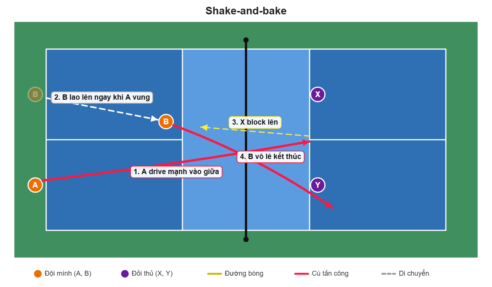
Hình 12. Shake-and-bake: A drive, B lao lên kết thúc.
Mục tiêu: Biến cú third shot drive thành cú kết thúc nhờ đồng đội lao lên lưới.
Vì sao hiệu quả:
Cú drive mạnh thường khiến đối thủ block lên vừa phải. Nếu có người đã lên sát lưới thì bóng block đó trở thành bóng dễ đập.
Cách thực hiện:
Người đánh cú 3 drive mạnh, thấp, có topspin.
Đồng đội lao lên ngay khi thấy người đánh bắt đầu vung (không chờ bóng qua lưới).
Đồng đội dừng ở gần vạch kitchen, vợt cao, vô lê hoặc đập bóng block.
Người drive tiến lên sau để lấp vị trí.
Ví dụ – Shake-and-bake cơ bản
Y trả giao bóng hơi ngắn vào thuận tay A.
A drive mạnh vào khoảng giữa X–Y. Ngay khi A vung, B chạy lên.
X block bóng lên ngang lưới về phía giữa.
B đã ở gần vạch, vô lê đập xuống chân Y.
Đối thủ phản ứng và cách xử lý:
Đối thủ block nhẹ vào chân B đang lao lên, hoặc lob qua đầu B: chỉ dùng khi cú drive thật sự tốt.
Sai lầm thường gặp: Drive yếu hoặc quá cao; người lao lên vô lê kém; dùng khi cú trả giao bóng sâu (drive từ sau vạch cuối rất khó).
16.16. Erne
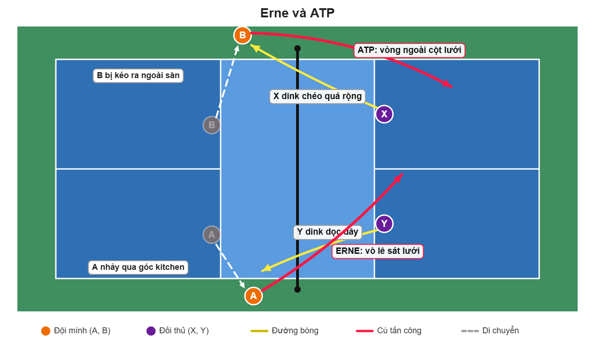
Hình 13. Erne (phía dưới) và ATP (phía trên).
Mục tiêu: Vô lê bóng dọc biên ngay sát lưới từ vị trí bên ngoài kitchen.
Vì sao hiệu quả:
Đánh từ rất gần lưới, góc đánh lớn, đối thủ gần như không kịp phản ứng.
Chỉ cần dọa erne vài lần là đối thủ phải tránh đánh dọc biên.
Cách thực hiện:
Nhận ra thói quen: đối thủ hay dink dọc dây về phía biên của bạn.
Khi thấy đối thủ chuẩn bị dink dọc dây, bước hoặc nhảy qua góc kitchen ra ngoài biên.
Luật: chân không được chạm kitchen (kể cả vạch) trong lúc vô lê. Nếu bạn đi bộ xuyên qua kitchen ra ngoài, cả hai chân phải đặt hẳn ra ngoài kitchen trước khi vô lê. Nhảy từ ngoài kitchen qua góc và vô lê khi đang trên không là hợp lệ, miễn là không chạm kitchen.
Vô lê xuống chân đối thủ hoặc vào khe giữa.
Ví dụ – Dụ đối thủ đánh dọc dây
A dink dọc dây vào Y (đối diện A). Y dink trả dọc dây sát biên.
A lặp lại một lần nữa, Y vẫn trả dọc dây.
Lần thứ ba, ngay khi dink xong A bước sang biên phải, ra ngoài sân cạnh góc kitchen.
Y lại dink dọc dây theo thói quen. A vô lê ngay sát lưới, xuống khe giữa X–Y.
Phân tích: Erne là chiến thuật dựa trên việc đọc thói quen. Phải "cài" ít nhất 1–2 lần đối thủ đánh dọc dây trước đó.
Đối thủ phản ứng và cách xử lý:
Đối thủ thấy bạn di chuyển sớm, đánh chéo vào khoảng trống bạn để lại: B phải dịch sang che giữa ngay khi A đi erne.
Sai lầm thường gặp: Di chuyển quá sớm, lộ ý đồ; chạm kitchen khi vô lê nên bị mất điểm.
16.17. ATP và lob tấn công
Mục tiêu: Hai cách ghi điểm bất ngờ: ATP khi bị kéo rộng, lob khi đối thủ dồn sát lưới.
Cách thực hiện:
ATP: khi bóng dink chéo quá rộng và nảy ra ngoài biên, chạy theo ra ngoài, để bóng xuống thấp, đánh song song mặt đất vòng ngoài cột lưới vào sân đối thủ. Bóng không cần đi qua phía trên lưới.
Lob tấn công: khi đối thủ đứng sát lưới, nghiêng người về trước. Ngụy trang như dink, mở mặt vợt, đánh topspin bổng qua phía trái tay đối thủ. Chỉ dùng 1–2 lần mỗi game.
Ví dụ – ATP
X dink chéo cực rộng, bóng nảy ra ngoài biên phải của A, kéo A ra ngoài sân 1–2 m.
A chạy theo, chờ bóng xuống thấp hơn mặt lưới.
A đánh thuận tay thẳng dọc biên, vòng ngoài cột lưới, bóng rơi vào sân sau lưng X.
Ví dụ – Lob tấn công
Sau 6 quả dink, X và Y đứng sát vạch, nghiêng người ra trước.
A làm động tác dink nhưng đánh lob topspin qua vai trái (trái tay) của Y.
Y phải xoay người chạy về; X phải chạy chéo sang che.
A và B giữ lưới, chờ bóng trả yếu để kết thúc.
Đối thủ phản ứng và cách xử lý:
Với ATP: đối thủ tránh dink quá rộng. Với lob: đối thủ đứng lùi một chút, khi đó quay lại dink.
Sai lầm thường gặp: Lob ngắn (bị đập); lob khi trời gió ngược mạnh; cố đánh ATP khi bóng không đủ rộng.
16.18. Đọc tư thế đối thủ
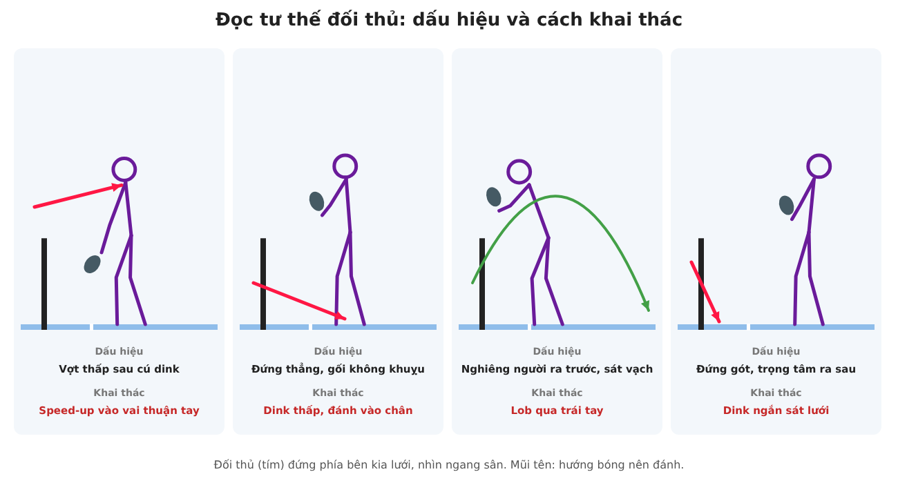
Hình 13a. Bốn dấu hiệu tư thế và cách khai thác.
Quan sát 5 điểm: vợt (cao hay thấp, nghiêng về bên nào), chân (song song hay lệch, đứng gót hay mũi), trọng tâm (nghiêng trước hay sau), vai và hông (xoay sớm báo hướng đánh), mặt vợt (mở là dink hoặc lob, đóng là drive).
Dấu hiệu
Ý nghĩa
Hành động của mình
Vợt thấp sau mỗi cú dink
Chậm phản ứng với bóng cao
Speed-up hoặc flick vào vai thuận tay.
Vợt luôn để bên thuận tay
Phía trái tay ngang người dễ bị bỏ trống
Speed-up vào hông hoặc vai trái.
Đứng thẳng, gối không khuỵu
Khó đánh bóng thấp
Dink sâu sát chân, topspin dink.
Đứng gót, trọng tâm ra sau
Chậm lên bóng ngắn
Dink ngắn sát lưới.
Nghiêng người ra trước, sát vạch
Dễ bị lob
Lob topspin qua trái tay.
Mở vai sớm, quay người về một hướng
Báo trước hướng đánh
Dịch trước về hướng đó để chặn hoặc poach.
Mặt vợt mở rộng khi chuẩn bị
Sắp dink bổng hoặc lob
Lùi nhẹ, chuẩn bị đập hoặc đổi vị trí.
Thở dốc, bước chậm
Mệt
Kéo dài điểm, kéo chạy ngang.
Ví dụ
Trong game đầu, A thấy Y luôn hạ vợt xuống ngang gối sau mỗi cú dink.
A nói với B: "Y hạ vợt sau dink, cứ có bóng ngang gối là speed-up vào vai phải Y."
Ba điểm sau đó, đội A ghi 2 điểm từ đúng mẫu này. Y bắt đầu giữ vợt cao, nhưng vì thế mà dink kém chính xác hơn.
Phân tích: Đọc được tư thế cho đội mình một mục tiêu cụ thể. Ngay cả khi đối thủ sửa, họ cũng phải trả giá ở chỗ khác.
16.19. Khai thác người yếu hơn
Mục tiêu: Dồn áp lực vào mắt xích yếu nhất của đội đối thủ.
Cách thực hiện:
Quan sát (game 1): ai lỗi trả giao bóng nhiều, ai dink cao, ai không lên lưới kịp, ai yếu trái tay, ai di chuyển chậm.
Thực hiện: giao bóng, trả giao bóng và dink chủ yếu vào người đó.
Cảnh giác người mạnh: người mạnh sẽ poach để cứu đồng đội. Vì vậy hãy đánh vào người yếu nhưng ở xa tầm với người mạnh, ví dụ biên ngoài của người yếu.
Khi người mạnh poach: đánh vào khoảng trống họ bỏ lại.
Ví dụ – Người mạnh poach cứu đồng đội
Y yếu hơn, X mạnh và hay poach. Đội A dink liên tục vào Y.
Đến quả thứ 4, X bắt đầu đứng lệch vào giữa, chực poach.
A dink vào biên ngoài bên trái của Y (xa tầm X). Y dink trả hơi cao.
B speed-up dọc biên phải của đối thủ, vào chỗ X vừa bỏ trống.
Phân tích: Khai thác người yếu không chỉ để họ mắc lỗi, mà còn kéo người mạnh khỏi vị trí.
Sai lầm thường gặp: Đánh vào người yếu bằng bóng dễ ngay trước mặt người mạnh; quên rằng người yếu cũng có thể "nóng tay" và đánh tốt sau vài điểm.
16.20. Khi nào tấn công, khi nào phòng thủ
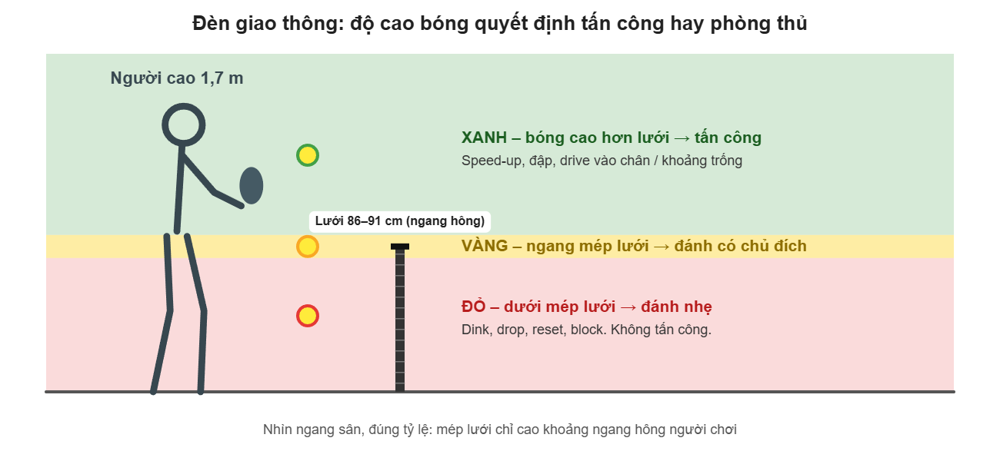
Hình 14. Quy tắc đèn giao thông theo độ cao điểm chạm bóng.
Trước mỗi cú đánh, hỏi nhanh 3 câu:
Bóng có cao hơn mép lưới khi mình chạm không?
Mình có cân bằng, chân đã dừng chưa?
Đối thủ có chưa sẵn sàng, hoặc mình có mục tiêu rõ ràng (chân, vai vợt, khoảng trống) không?
Số câu "có"
Lựa chọn
Ví dụ cú đánh
3
Tấn công
Speed-up, đập, drive vào chân hoặc khoảng trống.
2
Đánh có chủ đích nhưng an toàn
Roll volley, topspin dink, dink vào chân.
0–1
Trung hòa
Dink, drop, reset, block.
Ví dụ ba tình huống
Bóng ngang ngực, A đứng vững, X đang vợt thấp → 3 "có" → speed-up vào vai X.
Bóng ngang mép lưới, A cân bằng nhưng X–Y đều sẵn sàng → 2 "có" → topspin dink vào chân X.
Bóng thấp, A đang chạy sang biên → 0 "có" → dink chéo an toàn, về vị trí.
Bảng đèn giao thông:
Đèn
Độ cao bóng / thế của mình
Lựa chọn
Đỏ
Bóng dưới mép lưới, mình đang di chuyển hoặc mất cân bằng
Đánh nhẹ: dink, drop, reset. Không tấn công.
Vàng
Bóng ngang mép lưới, mình cân bằng
Dink có chủ đích, topspin dink, roll volley an toàn vào chân.
Xanh
Bóng trên lưới, mình cân bằng và đối thủ lệch vị trí
Tấn công: speed-up, đập, drive vào chân hoặc khoảng trống.
Biên độ an toàn: nhắm cách biên khoảng 30–60 cm, qua lưới khoảng 30 cm với cú nhẹ.
Theo tỷ số: khi đang dẫn, chơi chắc, giảm rủi ro; khi bị dẫn nhiều, chấp nhận rủi ro cao hơn có tính toán.
Quy tắc "2 lỗi": nếu một cú (ví dụ flick) đã hỏng 2 lần trong game, tạm dừng dùng cú đó.
Gió và mặt trời: đánh xuôi gió thì giảm lực; ngược gió có thể lob nhiều hơn.
16.21. Quản lý rủi ro theo tỷ số và tình huống
Đầu game (0–4 điểm): thăm dò, thử các hướng, tìm điểm yếu.
Đang dẫn: chơi tỷ lệ phần trăm cao, nhắm xa biên, ưu tiên giữa sân.
Điểm quyết định (game point): giao bóng và trả giao bóng an toàn tuyệt đối, không mạo hiểm sát biên.
Bị dẫn nhiều: thay đổi để phá nhịp: stack, lob, đổi kiểu giao bóng, chấp nhận rủi ro có tính toán.
Đối thủ ghi 3–4 điểm liền: xin hội ý (timeout), chậm nhịp, đổi chiến thuật.
Quy tắc 2 lỗi: một cú đã hỏng 2 lần trong game thì tạm dừng dùng.
Điều kiện: xuôi gió thì giảm lực, dùng drop nhiều hơn; ngược gió thì có thể drive và lob nhiều hơn; nắng chói một bên thì lob về phía đó.
Ví dụ – Tỷ số 10–9, đội A giao bóng
A giao sâu vào giữa ô, không nhắm góc.
Y trả giao bóng; A chọn drop bổng an toàn thay vì drive, dù bóng hơi cao.
Ở lưới, A và B chỉ dink chéo, chờ bóng thật cao mới tấn công.
X mất kiên nhẫn, speed-up bóng thấp ra ngoài. Đội A thắng game.
Phân tích: Ở điểm quyết định, đội nào mắc lỗi trước thường thua. Giảm rủi ro chính là chiến thuật.
16.22. Phân tích một điểm hoàn chỉnh
Đội A nhận giao bóng. Y yếu trái tay; X mạnh và hay poach.
Cú
Người
Cú đánh
Phân tích
1
X
Giao sâu vào A
Giao an toàn, đúng chuẩn.
2
A
Trả bổng sâu vào trái tay X, rồi lên lưới
Trả sâu cho A thời gian lên lưới; trái tay khiến cú 3 của X khó.
3
X
Drop trái tay, hơi cao
Hệ quả của cú trả tốt.
4
B
Roll volley xuống chân Y đang tiến lên
Bóng ngang thắt lưng: đủ điều kiện "2 có", chọn roll volley thay vì đập.
5
Y
Nâng bóng lên, vào giữa
Bị đánh vào chân khi đang di chuyển.
6
A
Dink chéo vào trái tay Y (thay vì đập ngay vì bóng chỉ ngang lưới)
Kiên nhẫn: bóng chưa đủ cao.
7–10
A–Y
Dink chéo 4 quả, A nhắm trái tay Y
Ép điểm yếu, chờ bóng cao.
11
X
Dịch vào giữa chực poach
Người mạnh muốn cứu đồng đội.
12
A
Dink vào biên ngoài trái của Y, xa tầm X
Đánh vào người yếu, xa người mạnh.
13
Y
Dink trả cao, ngang ngực B
Áp lực tích lũy.
14
B
Speed-up dọc biên phải đối thủ, chỗ X vừa bỏ trống
3 "có": bóng cao, B cân bằng, có khoảng trống. Ghi điểm.
Bài học: điểm được thắng nhờ chuỗi lựa chọn đúng (trả sâu → đánh vào chân → kiên nhẫn dink → khai thác người yếu → đánh vào khoảng trống người mạnh bỏ lại), không phải nhờ một cú đánh đặc biệt.
16.23. Đối phó theo lối chơi của đối thủ
Mục tiêu: nhận ra kiểu chơi của đối thủ trong 2–3 game đầu (hoặc ngay lúc khởi động) và chọn kế hoạch phù hợp, thay vì chơi cùng một kiểu với mọi đối thủ.
Kiểu đối thủ
Dấu hiệu nhận biết
Điểm yếu thường gặp
Kế hoạch chính
Người đánh mạnh (banger)
Drive cú thứ 3 gần như mọi lúc, speed-up cả bóng thấp, ít dink.
Lỗi nhiều khi phải đánh bóng thấp; ngại dink dài; nhiều cú bay ra ngoài.
Giữ bóng thấp, block mềm, để bóng cao ra ngoài, kéo họ vào thế dink.
Người dink kiên nhẫn
Rất ít lỗi, dink thấp, chỉ tấn công khi chắc chắn.
Ngại tốc độ, phản xạ tay có thể chậm.
Tăng nhịp: drive cú 3 nhiều hơn, topspin dink, speed-up sớm hơn ở bóng "vàng".
Người hay lob
Lob khi bị ép ở lưới hoặc khi bóng tới thấp.
Lob ngắn dễ bị đập; ít khi kết thúc điểm ở lưới.
Đứng lùi nửa bước khi thấy mặt vợt mở, thống nhất người chạy về, đánh vào chân để họ không lob được.
Người di chuyển chậm
Lên lưới muộn, ít khi chạy ngang kịp.
Bóng góc rộng, bóng ngắn sau bóng sâu.
Kéo chạy ngang, đổi độ sâu, kéo dài điểm.
Người phản xạ nhanh, trẻ, khỏe
Thích đấu vô lê nhanh, tấn công sớm.
Nóng vội, speed-up bóng thấp.
Giữ bóng thấp, tránh đấu vô lê nhanh, dink và reset, chờ họ tự mắc lỗi.
Người chưa lên lưới
Đứng cuối sân hoặc giữa sân sau cú trả, cú thứ 3.
Bóng vào chân khi đang ở giữa sân.
Drop ngắn hoặc dink sâu vào chân, giữ lưới và tấn công bóng họ nâng lên.
16.23.1. Gặp người đánh mạnh (banger)
Trả giao bóng bổng, sâu và chậm vào trái tay: bóng chậm và sâu khó drive mạnh, và cho bạn thời gian đứng vững ở lưới.
Ở lưới, đỡ drive theo mục 16.25: bóng thấp thì block mềm, bóng ngang ngực thì counter, bóng cao trên vai và đang bay lên thì để bóng đi.
Dink thấp: bóng dưới gối buộc họ phải đánh lên nếu muốn đánh mạnh, rất dễ hỏng.
Không đấu sức: dùng chính lực của họ bằng block, không vung vợt trả mạnh.
Kiên nhẫn: người đánh mạnh thường mắc nhiều lỗi khi điểm kéo dài.
Ví dụ
X là người đánh mạnh. A trả giao bóng bổng, sâu vào trái tay X.
X vẫn drive cú thứ 3 nhưng bóng đi cao ngang vai B và đang bay lên.
B không đánh, nghiêng người tránh. Bóng ra ngoài vạch cuối.
Điểm tiếp theo X drive thấp hơn; A block mềm vào kitchen, X phải chạy lên và nâng bóng; B đập.
Phân tích: Đội A không cần đánh mạnh hơn X, chỉ cần đỡ đúng cách và để X tự mắc lỗi.
16.23.2. Gặp người dink kiên nhẫn
Tăng tốc độ trận đấu: drive cú thứ 3 nhiều hơn, đặc biệt vào chân người đang tiến lên.
Topspin dink sâu: đẩy họ lùi, bóng nảy về phía trước, khó dink chính xác.
Speed-up sớm hơn: ở bóng "vàng" (ngang mép lưới) hãy dùng roll volley hoặc speed-up vào chân, không chờ bóng thật cao.
Poach nhiều hơn: họ thường dink chéo theo nhịp quen thuộc.
Không mất kiên nhẫn: đừng speed-up bóng thấp chỉ vì điểm kéo dài.
Ví dụ
Y dink rất chắc, 15–20 quả không lỗi.
A đổi sang topspin dink sâu sát vạch kitchen của Y.
Y phải lùi trọng tâm, quả dink tiếp theo hơi bổng (bóng "vàng").
A roll volley xuống chân Y, Y nâng bóng, B kết thúc.
16.23.3. Gặp người hay lob
Đọc dấu hiệu: mặt vợt mở rộng, người hạ thấp, vung từ dưới lên. Khi thấy vậy, lùi nửa bước khỏi vạch kitchen.
Thống nhất trước: bóng lob qua đầu người nào mà người đó không kịp xoay người thì đồng đội chạy chéo về đỡ và hô "Đổi". Người bị lob chuyển sang bên kia.
Đập vào giữa hoặc vào chân: đừng cố đập góc khi đang lùi.
Lob quá sâu, không đập được: drop bổng hoặc lob trả để có thời gian về lại vị trí.
Phòng ngừa: đánh vào chân, vào người đang di chuyển; người đang phải đánh từ dưới lên khó lob chính xác.
16.23.4. Gặp người di chuyển chậm hoặc lớn tuổi
Kéo chạy ngang: dink góc rộng, rồi dink sang góc bên kia.
Đổi độ sâu: một bóng sâu đẩy lùi, sau đó một bóng ngắn sát lưới.
Kéo dài điểm để họ mệt dần.
Lưu ý an toàn: lob vẫn hợp lệ, nhưng chạy lùi dễ gây ngã. Trong giao lưu thân thiện, cân nhắc hạn chế lob với người lớn tuổi.
16.23.5. Gặp người phản xạ nhanh
Giữ bóng thấp, tránh đưa bóng ngang ngực họ.
Tránh đấu vô lê nhanh; nếu bị cuốn vào, block mềm để thoát.
Dink và reset nhiều, kéo dài điểm; người phản xạ nhanh thường nóng vội và speed-up bóng thấp.
Chuẩn bị counter: vợt cao, đứng sát vạch.
16.23.6. Điều chỉnh giữa trận
Nếu kế hoạch A không hiệu quả sau 4–5 điểm liên tiếp, chuyển sang kế hoạch B đã chuẩn bị (mục 20.5).
Chỉ thay đổi một yếu tố mỗi lần: hướng đánh, nhịp độ, vị trí đứng, hoặc người bị nhắm tới.
Đối thủ đổi lối chơi thì nhận diện lại ngay, không giữ mãi kế hoạch cũ.
16.24. Chiến thuật đôi nam nữ (mixed doubles)
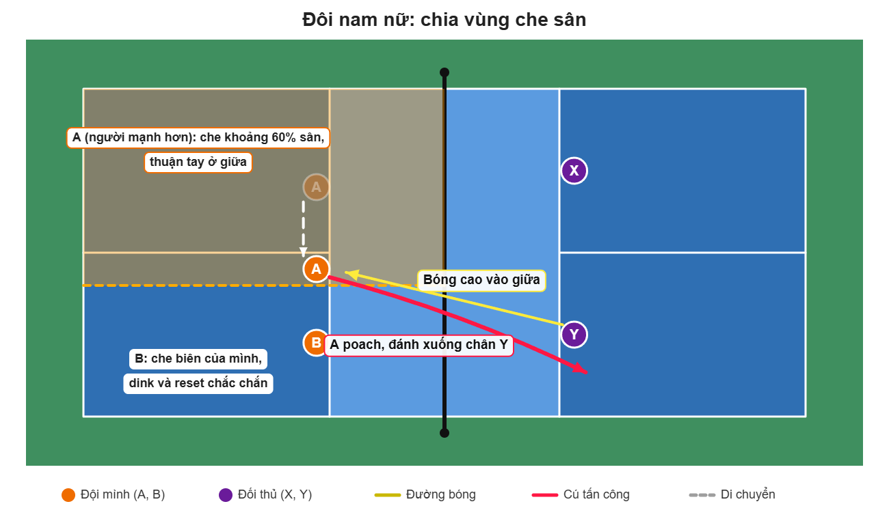
Hình 14a. Người mạnh hơn che khoảng 60% sân và poach bóng cao ở giữa.
Mục tiêu: tận dụng điểm mạnh của từng người và hạn chế điểm yếu khi hai người chênh lệch về sức mạnh, tốc độ hoặc trình độ. Người mạnh hơn không nhất định là nam; mục này gọi chung là "người mạnh hơn" và "người yếu hơn".
Vì sao cần chiến thuật riêng:
Đối thủ gần như luôn nhắm vào người yếu hơn.
Nếu không phân công rõ, người mạnh hơn hoặc cướp quá nhiều bóng (để lộ khoảng trống), hoặc không hỗ trợ đủ.
16.24.1. Bố trí vị trí
Người mạnh hơn đứng ở bên có thuận tay ở giữa sân (người thuận tay phải đứng bên trái). Như vậy người mạnh dùng thuận tay để che khe giữa, nơi phần lớn bóng đi vào.
Dùng stack (mục 16.14) để giữ bố trí này cả khi giao và khi nhận.
Người mạnh che khoảng 60% chiều ngang sân, gồm cả khe giữa; người yếu hơn che biên của mình.
16.24.2. Khi đội mình có người yếu hơn
Giao bóng và trả giao bóng sâu: để người yếu hơn có đủ thời gian lên lưới.
Người yếu hơn: tập trung dink chắc, reset và block. Không cần tấn công, nhiệm vụ là không tạo bóng cao cho đối thủ.
Người mạnh hơn: poach bóng cao hoặc chậm đi vào giữa, đánh xuống chân hoặc khoảng trống.
Sau khi poach: người yếu hơn lập tức dịch sang che bên còn lại.
Giao tiếp: thống nhất tín hiệu poach; người yếu hơn được phép hô "Bạn" để nhờ người mạnh nhận bóng giữa.
16.24.3. Khi khai thác đội đối thủ
Đánh phần lớn bóng (khoảng 70%) vào người yếu hơn, nhưng ở vị trí xa tầm với người mạnh, ví dụ biên ngoài của người yếu hơn.
Khi người mạnh poach sang, đánh vào khoảng trống họ bỏ lại (dọc biên phía người mạnh).
Thỉnh thoảng đánh vào người mạnh để họ không thể "đứng chờ" poach.
Với cú thứ 3 của đối thủ: nếu người yếu hơn phải đánh, ép họ bằng trả giao bóng sâu vào trái tay.
Ví dụ một điểm
Đối thủ X (mạnh) và Y (yếu hơn). A dink liên tục vào biên ngoài của Y.
X dịch dần vào giữa để poach.
Y dink trả hơi cao về giữa, X lao sang poach nhưng bóng của A đi thấp nên X chỉ đẩy được bóng nhẹ.
B speed-up dọc biên phía X (đã bỏ trống). Đội A ghi điểm.
Phân tích: Khai thác người yếu hơn để kéo người mạnh rời vị trí, rồi đánh vào chỗ người mạnh bỏ lại.
Sai lầm thường gặp: người mạnh cướp cả bóng thấp, bỏ trống biên; người yếu hơn đứng lùi sau vạch kitchen vì ngại; hai người không thống nhất ai nhận bóng giữa.
16.25. Phòng thủ trước cú drive
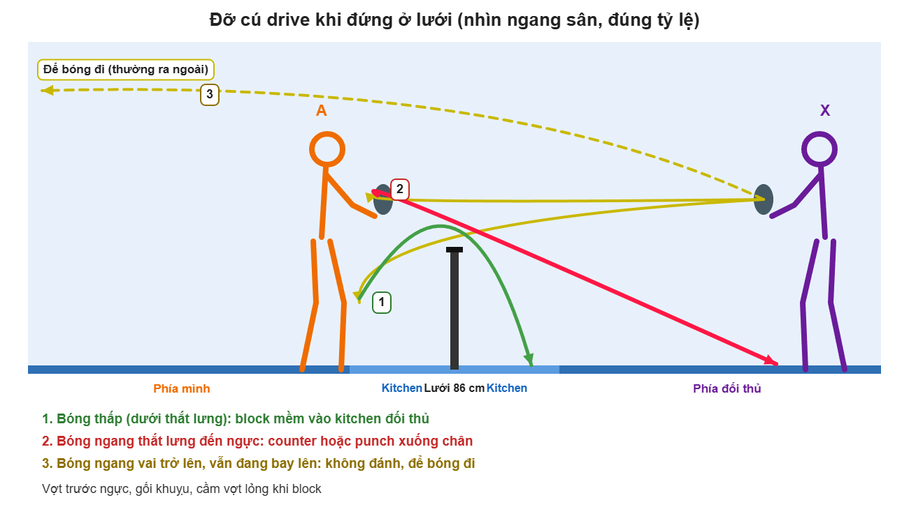
Hình 14b. Chọn cú đỡ theo độ cao của bóng drive.
Mục tiêu: khi đang đứng ở lưới, biến cú drive mạnh của đối thủ thành bóng khó cho họ, thay vì để mất điểm.
Tư thế chuẩn bị:
Đứng sát vạch kitchen, gối khuỵu, trọng tâm dồn về mũi chân.
Vợt trước ngực, đầu vợt hơi nghiêng về phía trái tay.
Split step đúng lúc đối thủ chạm bóng.
Đọc trước: đối thủ kéo vợt về sau dài, mặt vợt đóng, bóng nảy cao hoặc ngắn → sắp drive.
Bóng drive tới
Cú đỡ
Mục tiêu
Thấp, dưới thắt lưng
Block mềm (cầm lỏng tay, gần như không vung)
Bóng rơi nhẹ vào kitchen đối thủ, buộc họ chạy lên và đánh từ dưới lên.
Ngang thắt lưng đến ngực, mình đã sẵn sàng
Counter hoặc punch volley
Xuống chân người đang tiến lên, hoặc vào khe giữa.
Ngang vai trở lên và vẫn đang bay lên
Không đánh, để bóng đi
Phần lớn những bóng này rơi ra ngoài vạch cuối. Gọi "Ra" cho đồng đội.
Vào khe giữa hai người
Người có thuận tay ở giữa nhận (hoặc theo quy ước)
Tránh hai người cùng đánh hoặc cùng bỏ.
Mặc định khi không chắc: block mềm vào kitchen. Cú này ít rủi ro và đưa điểm về thế dink.
Không vung vợt: bóng drive đã có lực sẵn; vung thêm làm bóng bay ra ngoài.
Đối thủ vẫn ở cuối sân sau khi drive: block ngắn vào kitchen tốt hơn block sâu, vì block sâu cho họ thêm một cú drive nữa.
Ví dụ
A và B đứng ở lưới. X ở cuối sân drive cú thứ 3 rất mạnh.
Bóng tới thấp ngang gối A. A block mềm, bóng rơi giữa kitchen đối thủ.
X phải lao lên, đánh bóng từ dưới lên, bóng cao.
B đập xuống chân X.
Bài tập:
Drive – block: một người đứng cuối sân drive liên tục, người kia đứng ở lưới block mềm vào kitchen. 3 hiệp × 20 quả, mục tiêu 7/10 rơi trong kitchen.
Để bóng đi: người drive đánh lẫn bóng thấp và bóng cao. Người ở lưới phải quyết định nhanh: đỡ hay để bóng đi. Ghi lại số lần quyết định đúng.
Sai lầm thường gặp: vợt hạ thấp khi chờ; đứng lùi sau vạch (bóng tới chân nhiều hơn); cố đỡ cả bóng đang bay ra ngoài; vung vợt trả mạnh.
16.26. Chiến thuật khi tính điểm rally
Khác biệt chính: mọi pha bóng đều có điểm, kể cả khi đội mình đang nhận giao bóng. Game thường đến 15 hoặc 21. Một số thể thức có quy định "freeze" ở điểm cuối (xem mục 1.5). Luôn kiểm tra điều lệ giải.
Yếu tố
Tính điểm truyền thống
Tính điểm rally
Điều chỉnh
Lỗi giao bóng
Chỉ mất lượt giao
Mất điểm
Giao bóng an toàn hơn nữa, ưu tiên 100% vào sân.
Lỗi trả giao bóng
Đối thủ được điểm
Đối thủ được điểm
Giống nhau, nhưng giờ bên nhận cũng có thể ghi điểm nên càng không được tặng điểm.
Khi đang nhận
Không thể ghi điểm
Có thể ghi điểm
Bên nhận có lợi thế lên lưới trước, nên chủ động tấn công hơn khi nhận.
Nhịp game
Có giai đoạn chậm, có thể lấy lại
Nhanh, ít cơ hội gỡ lại
Coi điểm đầu game quan trọng như điểm cuối.
Chuỗi điểm thua
Thường chỉ mất lượt giao
Mỗi pha thua là một điểm
Dùng hội ý sớm hơn, ngay khi thua 3 điểm liên tiếp.
16.26.1. Chiến thuật theo giai đoạn của game
Đầu game: chơi chắc, ít lỗi, thăm dò điểm yếu. Một vài lỗi đầu game là mất điểm thật, không thể "lấy lại lượt giao".
Giữa game: áp dụng kế hoạch chính, khai thác điểm yếu đã tìm được.
Cuối game: giảm rủi ro. Cú trả giao bóng và cú thứ 3 phải chắc chắn.
Với quy định freeze: khi đối thủ chỉ còn 1 điểm là thắng và đội mình đang giao bóng, họ không thể thắng game ở pha đó; nếu họ thắng pha bóng thì chỉ được quyền giao. Đội mình có thể mạnh dạn hơn một chút ở pha này. Ngược lại, khi đội mình ở điểm cuối, hãy tập trung thắng pha bóng lúc mình giao. Cách áp dụng freeze khác nhau giữa các giải, nên kiểm tra kỹ điều lệ.
Ví dụ – Game đến 21, tỷ số 18–19
Đội A đang dẫn 19–18 và nhận giao bóng.
A trả giao bóng bổng, sâu vào giữa, không mạo hiểm sát biên.
Đội A lên lưới trước, dink chéo chờ bóng cao.
X speed-up bóng thấp ra ngoài. Đội A lên 20–18.
Phân tích: Khi tính điểm rally, đội nhận vẫn ghi điểm được, nên chơi chắc và tận dụng lợi thế lên lưới trước của bên nhận.
Tập luyện: nếu giải bạn tham gia dùng tính điểm rally, mỗi tuần nên đánh ít nhất 1–2 trận theo đúng thể thức (đến 15 hoặc 21) để quen nhịp.
17. Chiến thuật đánh đơn
Đánh đơn dùng chung sân và luật với đánh đôi, nhưng một người phải che cả chiều ngang 6,1 m. Vì thế lối chơi thiên về tốc độ, độ sâu, góc đánh và thể lực hơn là dink kiên nhẫn.
17.1. Khác biệt chính so với đánh đôi
Yếu tố
Đánh đôi
Đánh đơn
Giao bóng
Chủ yếu an toàn, sâu
Vũ khí tấn công: sâu, mạnh, góc
Trả giao bóng
Bổng, sâu để kịp lên lưới
Sâu và thấp hơn, vẫn lên lưới ngay
Cú thứ 3
Drop là chủ đạo
Drive và passing là chủ đạo, drop ít hơn
Dink
Rất nhiều
Ít; dink thường là bước chuẩn bị cho cú passing hoặc tấn công
Vị trí
Theo sợi dây với đồng đội
Đứng ở giữa các hướng trả bóng có thể xảy ra
Thể lực
Phản xạ tay
Chạy nhiều, cần sức bền và tốc độ
17.2. Giao bóng trong đánh đơn
Giao sâu là bắt buộc: bóng ngắn cho đối thủ trả mạnh và lên lưới dễ dàng.
Giao vào trái tay sâu, hoặc giao góc rộng để kéo đối thủ ra khỏi sân, mở khoảng trống cho cú thứ 3.
Có thể giao mạnh hơn đánh đôi vì không có người thứ hai ở lưới chờ tấn công cú trả.
Giao xong, đứng ở gần giữa vạch cuối, sẵn sàng cho cú trả.
17.3. Trả giao bóng và lên lưới
Trả sâu, ưu tiên vào trái tay hoặc vào góc đối thủ vừa giao (để họ phải chạy ngược).
Lên lưới ngay sau cú trả. Không đi thẳng lên giữa mà lên theo hướng bóng mình vừa đánh: trả về góc trái của đối thủ thì đứng lệch về phía đó để chặn đường dọc dây.
Dừng split step khi đối thủ đánh cú thứ 3.
17.4. Cú thứ 3 và cú passing
Nếu đối thủ đã lên lưới: passing shot (drive thấp dọc dây hoặc chéo góc, qua người họ), hoặc drop rồi tiến lên.
Passing dọc dây khi đối thủ đứng lệch vào giữa; passing chéo khi đối thủ che dọc dây.
Nếu đối thủ còn ở giữa sân: drive vào chân.
Nếu đối thủ đứng quá sát lưới: lob qua trái tay.
17.5. Đứng ở đâu?
Nguyên tắc: đứng ở giữa các hướng trả bóng có thể xảy ra, không phải ở giữa sân.
Khi bóng của bạn đi vào góc trái của đối thủ, góc trả của họ thiên về bên đó, nên bạn dịch về bên đó.
Ở lưới đánh đơn, đứng lùi hơn đánh đôi một chút (khoảng 30–60 cm sau vạch) để có thời gian xử lý passing và lob.
17.6. Đánh khi cả hai cùng ở lưới
Dink chéo góc rộng để kéo đối thủ ra biên, sau đó đánh dọc dây hoặc vào góc đối diện.
Tấn công sớm hơn đánh đôi vì đối thủ phải che cả sân.
Đánh vào chân và vào góc kitchen gần biên: đối thủ phải chạy chéo, dễ mất thăng bằng.
Ví dụ – Một điểm đánh đơn
A giao sâu, góc rộng vào thuận tay X, kéo X ra ngoài biên phải.
X trả về giữa, hơi ngắn. A đứng trong sân.
A drive dọc dây sang góc trái của X (khoảng trống lớn nhất), rồi lên lưới lệch về phía trái.
X chạy sang, cố passing dọc dây. A đã đứng chặn sẵn, vô lê chéo góc phải.
X không kịp chạy về. A thắng điểm.
Phân tích: Cú giao góc rộng mở ra khoảng trống ở phía bên kia. Cả điểm là việc kéo đối thủ chạy qua lại và đứng đúng vị trí chặn.
17.7. Tập luyện cho đánh đơn
Skinny singles: chỉ dùng nửa sân (dọc), tập kỹ năng ở lưới và vùng chuyển tiếp.
Passing shot drill: một người ở lưới, một người ở cuối sân tập passing dọc dây và chéo.
Thể lực: chạy biến tốc 10–15 lần × 20 m, chạy chạm 4 góc sân.
Đánh trận đơn: mỗi tuần ít nhất 1 trận để quen nhịp và cảm giác che sân một mình.
18. Người thuận tay trái và cặp trái – phải
18.1. Lợi thế của người thuận tay trái
Đối thủ ít khi gặp người thuận tay trái, nên khó đọc hướng bóng và xoáy.
Bóng xoáy từ người thuận trái đi theo hướng ngược với thói quen của đối thủ.
Giao bóng góc rộng từ ô trái sang trái tay của người thuận phải ở ô phải đối diện thường rất khó chịu.
18.2. Thuận tay ở đâu? Bảng tra nhanh
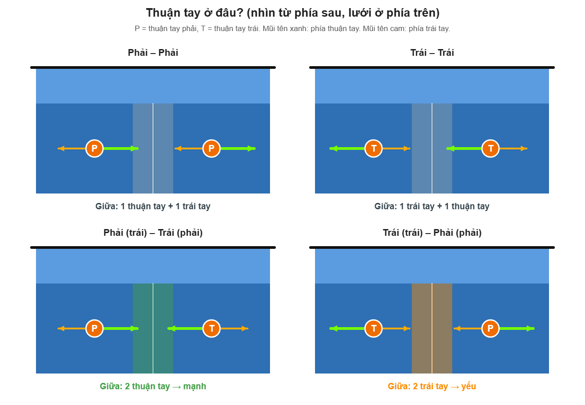
Hình 15. Vị trí thuận tay và trái tay ở giữa sân theo từng kiểu cặp.
Cặp (đứng trái – đứng phải)
Giữa sân là
Hai biên là
Nhận xét
Phải – Phải
Thuận tay người trái, trái tay người phải
Trái tay người trái, thuận tay người phải
Cách đứng thông thường.
Trái – Trái
Trái tay người trái, thuận tay người phải
Thuận tay người trái, trái tay người phải
Đối xứng với cặp phải–phải.
Phải (đứng trái) – Trái (đứng phải)
Hai thuận tay
Hai trái tay
Giữa rất mạnh, nhưng hai biên yếu.
Trái (đứng trái) – Phải (đứng phải)
Hai trái tay
Hai thuận tay
Hai biên mạnh, nhưng giữa yếu.
18.3. Cặp một người thuận trái, một người thuận phải nên đứng thế nào?
Phương án 1 – hai thuận tay ở giữa: người thuận phải đứng trái, người thuận trái đứng phải. Lợi thế: phần lớn bóng đi vào giữa (đặc biệt ở dink và third shot), cả hai đều đánh bằng thuận tay, rất mạnh khi poach và tấn công. Điểm yếu: bóng dọc biên vào trái tay của cả hai. Đây là phương án phổ biến ở trình cao.
Phương án 2 – hai thuận tay ở biên: người thuận trái đứng trái, người thuận phải đứng phải. Lợi thế: che biên tốt, đánh dọc dây mạnh. Điểm yếu: bóng vào giữa gặp hai trái tay, dễ nhầm lẫn.
Để luôn giữ được phương án mong muốn, cặp này nên dùng stack (mục 16.14).
Thống nhất trước trận: bóng giữa người nào nhận (thường là người đánh bằng thuận tay, hoặc người đánh chéo trước đó).
18.4. Chiến thuật dành cho người thuận tay trái
Khi đứng ô phải: thuận tay hướng ra giữa sân, dễ poach và kết thúc ở giữa.
Khi đứng ô trái: thuận tay hướng ra biên, đánh dọc dây và erne ở biên trái mạnh.
Giao bóng: dùng xoáy ngược và góc rộng mà người thuận phải ít gặp.
Dink chéo với người thuận phải đứng chéo góc: biết rằng bạn đang dink vào thuận tay hay trái tay họ tùy vị trí. Xem bảng 18.2 để chọn đúng.
18.5. Khi đối đầu người thuận tay trái
Trong lúc khởi động, xác định ngay ai thuận tay trái. Báo cho đồng đội.
Xác định lại "giữa sân" của đối thủ theo bảng 18.2. Ví dụ đối thủ là cặp phải (đứng trái) – trái (đứng phải) thì đừng đánh vào giữa, mà đánh dọc hai biên vào trái tay.
Speed-up nhắm vai thuận tay: với người thuận trái là vai trái.
Lob qua trái tay: với người thuận trái là lob qua vai phải của họ.
Cẩn thận với xoáy ngược: bóng giao và dink của người thuận trái nảy theo hướng ngược lại, cần chuẩn bị sớm.
18.6. Đổi các ví dụ ở mục 16 cho người thuận tay trái
Ở mọi ví dụ mục 16, nếu một người là thuận tay trái, hãy đổi "trái tay" thành "thuận tay" và ngược lại cho người đó.
Các ví dụ nhắm "vai phải" (vai thuận tay) đổi thành "vai trái".
Các ví dụ "giữa sân là thuận tay người bên trái" cần tra lại bảng 18.2.
PHẦN V – THI ĐẤU
19. Tâm lý thi đấu
Ở cùng trình độ kỹ thuật, người thắng thường là người giữ được bình tĩnh và tập trung lâu hơn. Tâm lý cũng là kỹ năng có thể luyện tập.
19.1. Thói quen giữa các điểm (15–20 giây)
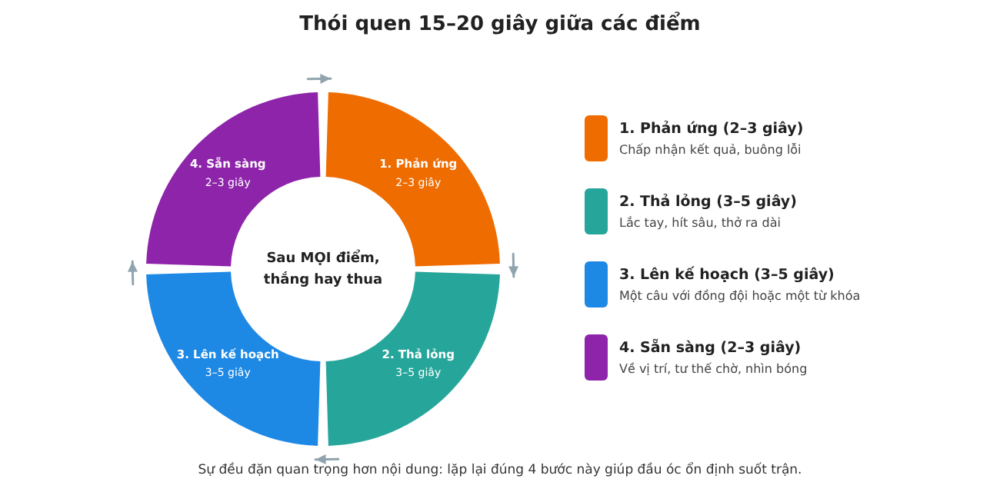
Hình 15a. Bốn bước giữa các điểm.
Phản ứng (2–3 giây): chấp nhận kết quả điểm vừa rồi. Nếu là lỗi, cho phép mình bực một chút, rồi buông.
Thả lỏng (3–5 giây): quay lưng về phía lưới, lắc tay, hít sâu bằng mũi, thở ra dài bằng miệng.
Lên kế hoạch (3–5 giây): trao đổi một câu với đồng đội hoặc tự nhắc một từ khóa: "sâu", "kiên nhẫn", "trái tay Y".
Sẵn sàng (2–3 giây): về vị trí, tư thế chờ, nhìn đối thủ, tập trung vào quả bóng.
Lặp lại thói quen này sau mọi điểm, thắng hay thua. Sự đều đặn giúp đầu óc ổn định.
19.2. Thoát khỏi chuỗi lỗi
Nhận ra sớm: 2–3 lỗi liên tiếp là dấu hiệu. Đừng chờ đến 5–6 lỗi.
Thở hộp: hít vào 4 giây – giữ 4 giây – thở ra 4 giây – giữ 4 giây. Làm 2 vòng.
Quay về cú an toàn: giao bóng giữa ô, trả sâu vào giữa, dink chéo. Tạm bỏ các cú rủi ro (flick, lob, speed-up bóng thấp).
Đặt mục tiêu nhỏ: "điểm này chỉ cần đưa bóng qua lưới 5 lần". Thắng mục tiêu nhỏ để lấy lại tự tin.
Tập trung vào quá trình: nghĩ đến việc cần làm (chân, vợt, mục tiêu), không nghĩ đến tỷ số.
Ngôn ngữ cơ thể: đứng thẳng, vai mở. Đối thủ nhìn thấy bạn cúi đầu sẽ được thêm tự tin.
Ví dụ – Bị dẫn 2–7 sau chuỗi lỗi speed-up
A đã speed-up hỏng 3 lần liên tiếp. Đội A bị dẫn 2–7.
B xin hội ý. Cả hai thở hộp 2 vòng.
Thống nhất: tạm thời chỉ speed-up khi bóng trên lưới; mọi thứ khác dink chéo vào trái tay Y.
Đội A thắng 4 điểm liên tiếp nhờ ít lỗi, đối thủ bắt đầu mất kiên nhẫn.
Phân tích: Đội A không thay đổi kỹ thuật mà thay đổi lựa chọn cú đánh và nhịp độ. Đó là cách thoát chuỗi lỗi hiệu quả nhất.
19.3. Dùng hội ý đúng lúc
Khi nào: đối thủ thắng 3–4 điểm liên tiếp; mình mắc chuỗi lỗi; cần thống nhất lại chiến thuật; trước điểm quyết định nếu thấy cả đội căng thẳng.
Cấu trúc 1 phút: 15 giây uống nước và thở; 30 giây trao đổi một thay đổi cụ thể (ví dụ "chuyển sang stack", "đánh vào Y"); 15 giây động viên và về vị trí.
Không dùng hội ý để trách đồng đội hoặc phân tích quá nhiều.
19.4. Áp lực ở điểm quyết định
Chấp nhận cảm giác run tay là bình thường. Hít thở chậm trước khi giao hoặc nhận.
Chọn cú có tỷ lệ thành công cao nhất của mình, không phải cú đẹp nhất.
Khi đang dẫn mà bị gỡ: tránh chơi quá thận trọng (đánh bóng "đẩy cho qua"). Giữ đúng lối chơi đã giúp mình dẫn điểm.
Khi bị dẫn: không có gì để mất, cứ đánh theo kế hoạch, đối thủ mới là bên chịu áp lực.
19.5. Giao tiếp với đồng đội và xử lý đối thủ khó chịu
Sau lỗi của đồng đội: nói "không sao", "điểm sau", hoặc đập tay. Không thở dài, không lắc đầu.
Góp ý chiến thuật dưới dạng "mình thử…" thay vì "bạn đừng…".
Đối thủ gọi bóng gây tranh cãi, nói khích, câu giờ: không tranh luận kéo dài. Nếu có trọng tài thì nhờ trọng tài; nếu không, chấp nhận và tập trung vào điểm sau.
Coi việc giữ bình tĩnh là một cách thắng đối thủ.
19.6. Mục tiêu và nhật ký tâm lý
Đặt mục tiêu quá trình cho mỗi trận (ví dụ "giao bóng 100% vào sân", "dùng thói quen giữa điểm mọi lúc") thay vì chỉ mục tiêu thắng thua.
Sau trận, ghi lại: lúc nào mất tập trung, lý do, đã làm gì để lấy lại.
Mỗi tối trước giải, hình dung 3–5 phút: mình giao bóng tốt, dink kiên nhẫn, bình tĩnh ở điểm quyết định.
20. Chuẩn bị cho giải đấu
20.1. Trước giải 2–4 tuần
Tìm hiểu thể thức: tính điểm truyền thống hay rally; game đến 11, 15 hay 21; đánh 1 game hay 2/3 game; vòng tròn (round robin) hay loại kép (double elimination); có trọng tài không.
Chọn đúng nội dung theo trình độ: thường dựa trên điểm DUPR hoặc trình độ tự đánh giá. Đăng ký thấp hơn trình thật là thiếu fair play, cao quá thì không có trải nghiệm tốt.
Chọn đồng đội và thống nhất: ai đứng bên nào, có stack không, ai nhận bóng giữa, tín hiệu poach, cách gọi bóng.
Tập theo thể thức: đánh trận đúng số điểm, có tính hội ý, tập điểm quyết định.
Tập với bóng chính thức của giải.
Áp dụng chu kỳ hóa (mục 8): tăng cường độ, giảm dần khối lượng.
20.2. Tuần trước giải
Giảm 40–50% khối lượng tập, giữ cường độ ngắn, tập những cú chắc nhất.
Không thử kỹ thuật mới, không đổi vợt mới.
Ngủ 7–9 tiếng, đặc biệt 2 đêm trước giải.
Kiểm tra dụng cụ: vợt (và vợt dự phòng), quấn cán mới, giày đã quen chân.
Xem lịch thi đấu, địa điểm, giờ có mặt, chỗ đậu xe.
20.3. Ngày thi đấu: ăn uống và đồ mang theo
Bữa sáng: ăn trước giờ thi đấu 2–3 tiếng, ưu tiên tinh bột dễ tiêu (cơm, bánh mì, xôi ít dầu, cháo, chuối) và một ít đạm. Tránh đồ chiên, nhiều dầu mỡ, nhiều chất xơ.
Uống nước: uống khoảng 400–500 ml trong 2 tiếng trước trận. Trong lúc chơi uống từng ngụm nhỏ 150–250 ml mỗi 15–20 phút. Trời nóng hoặc chơi trên 60 phút thì bổ sung điện giải.
Giữa các trận: ăn nhẹ dễ tiêu: chuối, bánh mì, bánh gạo, hạt, sữa chua uống. Tránh ăn no.
Sau giải: ăn bữa có tinh bột và đạm trong vòng 1–2 tiếng để hồi phục.
Đồ cần mang
Đã chuẩn bị?
Vợt chính và vợt dự phòng
Quấn cán dự phòng, băng cạnh
Giày (và tất dự phòng)
2–3 bộ quần áo, khăn
Bình nước lớn, gói điện giải
Đồ ăn nhẹ
Mũ, kính, kem chống nắng
Băng dán, đai khuỷu hoặc cổ chân, thuốc giảm đau thông thường
Bóng chính thức để khởi động
Giấy tờ, thông tin đăng ký, lịch thi đấu
Sổ ghi chú về đối thủ
20.4. Khởi động trước trận
Trước khi vào sân (15–20 phút): chạy nhẹ, giãn cơ động, thang dây hoặc bước ngang, vài lần bật nhảy nhẹ, shadow swing.
Khởi động trên sân (thường khoảng 5 phút): dink 1 phút → vô lê 1 phút → drive và drop từ cuối sân 1–2 phút → vài quả đập bóng → 3–5 quả giao bóng.
Khởi động đến mức hơi đổ mồ hôi, tim đập nhanh hơn bình thường, nhưng không mệt.
Nếu phải chờ lâu giữa các trận, khởi động lại 5–10 phút trước trận tiếp theo.
20.5. Xem đối thủ trước và trong lúc khởi động
Nếu có thể, xem đối thủ đánh một trận trước. Nếu không, dùng 5 phút khởi động để quan sát. Ghi chú theo danh sách:
Điều cần quan sát
Ghi chú
Ai thuận tay trái?
Trái tay của ai yếu hơn? Có ai né trái tay?
Ai dink kém kiên nhẫn, hay speed-up?
Ai vô lê nhanh, ai chậm?
Có stack không? Ai thích đứng bên nào?
Cú giao bóng: sâu hay ngắn, có xoáy không?
Có ai hay poach không?
Thể lực, tuổi, có đai hỗ trợ (dấu hiệu chấn thương) không?
Người yếu hơn trong cặp là ai?
Từ ghi chú, đặt một kế hoạch chính và một kế hoạch dự phòng. Ví dụ: "Kế hoạch A: dink và giao bóng vào trái tay Y. Kế hoạch B nếu không hiệu quả: chuyển sang drive cú 3 vào chân X và lob nhiều hơn".
20.6. Giữa các trận
Hồi phục: ngồi nghỉ ở chỗ mát, uống nước, ăn nhẹ, thay áo nếu ướt.
Giữ cơ thể ấm: giãn cơ nhẹ, đi bộ, không ngồi im quá lâu.
Xem trận của đối thủ tiếp theo nếu có thể, cập nhật ghi chú.
Trao đổi ngắn với đồng đội: điều gì hiệu quả ở trận trước, giữ lại hay thay đổi.
20.7. Sau giải
Điền phiếu tự đánh giá (mục 22) cho từng trận khi còn nhớ rõ.
Xem lại video (nếu có): đếm lỗi tự đánh hỏng, tỷ lệ third-shot drop, các điểm mất ở điểm quyết định.
Chọn 2–3 điểm cần cải thiện và đưa vào kế hoạch tập 4 tuần tiếp theo.
Nghỉ hồi phục 2–3 ngày, tập nhẹ, xử lý các chấn thương nhỏ.
20.8. Lễ nghi thi đấu
Chào, giới thiệu và chúc đối thủ trước trận; đập vợt chào sau trận dù thắng hay thua.
Gọi điểm to, rõ trước mỗi lần giao.
Gọi bóng trung thực; không chắc thì là bóng trong.
Không làm ồn hoặc cố ý gây phân tâm khi đối thủ đánh.
Bóng lăn sang sân khác: chờ hết điểm của sân đó rồi mới gọi xin bóng; khi bóng sân khác lăn vào sân mình, hô "Bóng" để dừng điểm.
Đúng giờ, không câu giờ, tôn trọng trọng tài và ban tổ chức.
PHỤ LỤC
21. Lộ trình thực hành chiến thuật trong 4 tuần
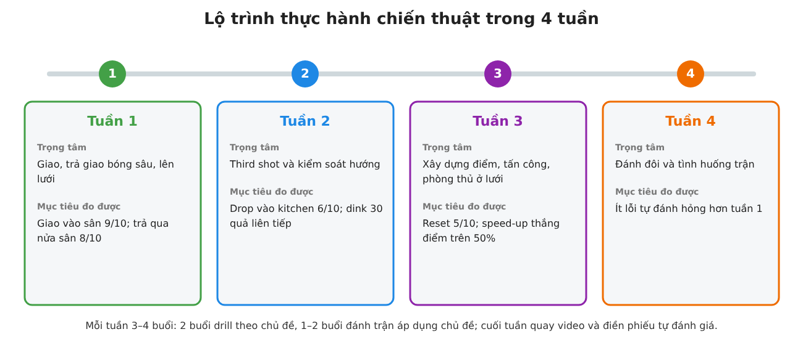
Hình 15b. Trọng tâm và mục tiêu của từng tuần.
Tuần
Trọng tâm chiến thuật
Bài tập chính
Mục tiêu đo được
Tuần 1
Giao bóng, trả giao bóng sâu, lên lưới
Giao vào vùng mục tiêu; trả sâu rồi chạy lên; drill "drop and step".
Giao bóng vào sân 9/10, trả qua nửa sân 8/10.
Tuần 2
Third-shot drop/drive và điều khiển hướng
Drop vào giữa và trái tay; drive vào chân; dink chéo và dọc dây theo hiệu lệnh.
Drop vào kitchen 6/10; dink 30 quả liên tiếp.
Tuần 3
Xây dựng điểm, tấn công và phòng thủ ở lưới
Dink có quyền speed-up; reset từ giữa sân; hands battle; roll volley và flick.
Reset thành công 5/10; tỷ lệ speed-up được điểm hơn 50%.
Tuần 4
Đánh đôi và tình huống trận
Poach, stack, shake-and-bake; đánh trận có nhiệm vụ (ví dụ chỉ được tấn công khi bóng ở mức "xanh").
Giảm lỗi tự đánh hỏng mỗi trận so với tuần 1.
Mỗi tuần 3–4 buổi: 2 buổi drill theo bảng, 1–2 buổi đánh trận có áp dụng chủ đề của tuần. Cuối mỗi tuần quay video 1 trận và điền phiếu tự đánh giá.
22. Phiếu tự đánh giá sau mỗi trận
Ngày: ________ Đồng đội: ________ Đối thủ: ________ Tỷ số: ________
Hạng mục
Điểm (1–5)
Ghi chú
Giao bóng sâu và ổn định
Trả giao bóng sâu và lên lưới kịp
Chất lượng third-shot drop/drive
Kiểm soát hướng bóng (chéo, dọc, giữa, chân)
Kiên nhẫn khi dink
Chọn đúng lúc tấn công (đèn xanh)
Phòng thủ: block, reset, counter
Phối hợp và giao tiếp với đồng đội
Đọc và khai thác điểm yếu đối thủ
Tâm lý và tập trung
Số lỗi tự đánh hỏng: ____ (trong đó lỗi vào lưới: ____, ra ngoài: ____)
3 điều làm tốt: ____
3 điều cần cải thiện: ____
Bài tập ưu tiên cho tuần tới: ____
23. Bảng thuật ngữ
Thuật ngữ
Giải nghĩa
Kitchen / NVZ
Vùng cấm vô lê, 7 feet sát lưới.
Transition zone
Vùng giữa sân, giữa cuối sân và kitchen.
Dink
Cú đánh nhẹ rơi vào kitchen đối thủ.
Third-shot drop
Cú thứ 3 nhẹ rơi vào kitchen, giúp bên giao bóng lên lưới.
Drive
Cú đánh mạnh, thấp từ cuối sân.
Volley
Đánh bóng trước khi bóng chạm sân.
Block / Reset / Counter
Chặn bóng / làm chậm bóng về kitchen / phản đòn nhanh.
Speed-up
Chủ động tăng tốc từ tình huống đánh nhẹ.
Flick
Tăng tốc bằng cổ tay từ tư thế dink.
Roll volley
Vô lê có topspin.
Poach
Cướp bóng sang phần sân của đồng đội.
Stack
Xếp vị trí hai người cùng một bên rồi di chuyển.
Shake-and-bake
Drive cú thứ 3, đồng đội lao lên kết thúc.
Erne
Nhảy qua góc kitchen để vô lê sát lưới.
ATP
Đánh bóng vòng ngoài cột lưới.
Split step
Nhún hai chân khi đối thủ chạm bóng.
Unforced error
Lỗi tự đánh hỏng, không bị đối thủ ép.
DUPR
Hệ thống tính điểm trình độ dựa trên kết quả trận đấu.